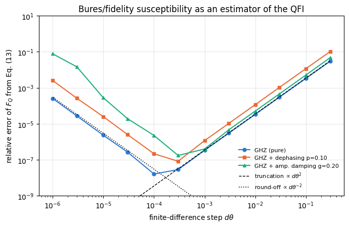
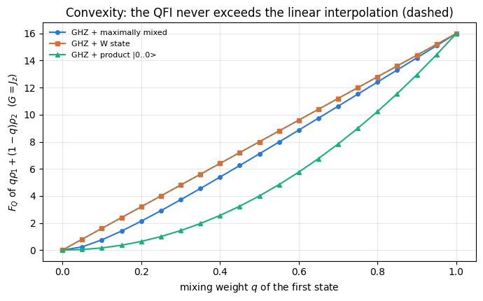
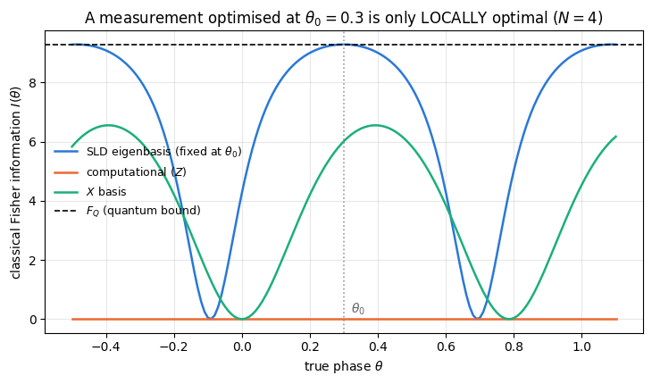
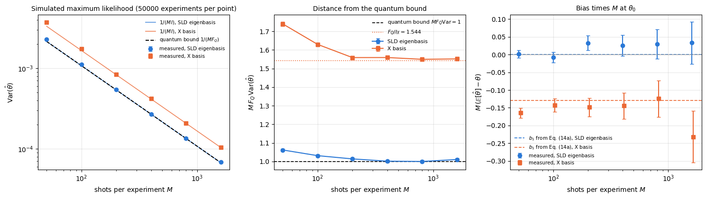
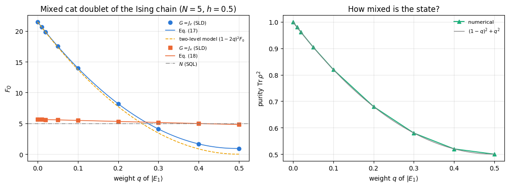

The previous notebook, 29 — quantum Fisher information: how fast a quantum state changes under a small parameter shift, derived the symmetric logarithmic derivative (SLD), the quantum Fisher information \(F_Q\) of a mixed state, and the Braunstein–Caves theorem (\(F_Q\) is the largest classical Fisher information any measurement can produce), and tested the SLD and its optimal measurement on one full-rank two-qubit state. Three things were left open:
rank-deficient states (pure states, or the dephased GHZ state of rank two), where the SLD equation has a kernel;
many-qubit states stored as density tensors, with noise applied before or after the encoding;
the chain from clicks to an error bar for a general measurement, including the finite-sample bias of the estimator.
This notebook supplies all three. It is the workshop notebook of the chapter: we build, from the definition, the generic pipeline that every later protocol instantiates,
and we work through its four stages with code and numbers:
Encoding. We apply \(e^{-i\theta G}\) to a density tensor without ever building a \(2^N\times2^N\) matrix, and get \(\partial_\theta\rho_\theta\) three independent ways (an exact commutator, central finite differences, and forward-mode automatic differentiation straight through the encoding function) that must agree.
The QFI. We solve the SLD equation \(\partial_\theta\rho=\tfrac12(L\rho+\rho L)\) — a Lyapunov equation — numerically in the eigenbasis of \(\rho\), treat the kernel where \(\lambda_m+\lambda_n=0\) explicitly, and evaluate \(F_Q=\mathrm{Tr}(\rho L^2)\).
The optimal measurement is the projective measurement in the eigenbasis of \(L\) (notebook 29, Section 5.3). We build it from the numerical \(L\) and check that it reaches \(F_Q\) while naive readouts do not.
Simulated experiments. We sample outcomes from the exact Born probabilities, estimate \(\theta\) by maximum likelihood, repeat the experiment tens of thousands of times and compare the measured variance with \(1/(M F_Q)\), and the measured bias with its first-order prediction, with error bars.
Along the way we run the machine on the states and generators that the rest of the chapter needs: product, GHZ, W, Dicke and Haar-random states; depolarised, dephased and amplitude-damped GHZ states, with the noise applied before and after the encoding (and a clean criterion for when the two coincide); an imperfectly prepared cat state of a spin chain; and the generators \(J_x\), \(J_y\), \(J_z\), a staggered field, and a single-site operator.
What you will learn
Physics
what the symmetric logarithmic derivative is, why it is the natural quantum analogue of the classical score, and why \(F_Q\) is \(\theta\)-independent for unitary encoding;
why mixing states can only destroy metrological power (convexity), and what happens when it does not;
when a noise channel commutes with the phase encoding — and therefore when “noise before” and “noise after” are the same experiment;
how much of the quantum advantage a sub-optimal but experimentally convenient readout throws away.
Numerical methods
solving a Lyapunov equation by eigendecomposition, and handling a singular kernel without producing NaNs;
three independent derivatives of an operator-valued function, and what their disagreement would have told us;
the Bures/fidelity susceptibility as a finite-difference estimator of \(F_Q\), with the classic competition between truncation error \(O(d\theta^2)\) and round-off \(O(d\theta^{-2})\);
maximum-likelihood estimation on a grid, vmap-ed over tens of thousands of simulated experiments, with a bootstrap-free error bar on a variance, and sampling a sufficient statistic (the counts) instead of individual clicks;
the \(O(1/M)\) bias of maximum likelihood, from a second-order expansion of the score equation.
Implementation practice
density tensors of rank \(2N\): ket axes \(0\ldots N-1\), bra axes \(N\ldots2N-1\), and what “apply an operator from the right” means in that language;
jax.jacfwd through a whole physical simulation;
writing engine-style functions with MATH / IMPLEMENTATION / COST docstrings that later notebooks can reuse verbatim.
Conventions and sizes. Qubit \(q\) = tensor axis \(q\); \(\vert0\rangle\) is the \(+1\) eigenstate of \(Z\); \(J_a=\tfrac12\sum_q\sigma^a_q\). The parameter is encoded by \(U(\theta)=e^{-i\theta G}\) with \(G\) Hermitian. Everything in this notebook manipulates full density tensors of rank \(2N\) and diagonalises \(2^N\times2^N\) matrices, so we stay at \(N\le6\) (at \(N=7\) a density matrix is still only \(128\times128\), but the sweeps get slow).
Configuration
Every notebook of this course starts with the same cell. Choose where to run (DEVICE) and the floating-point precision (PRECISION): "double" = float64/complex128 (default, recommended for physics), "single" = float32/complex64 (half the memory, faster on consumer GPUs, but watch the round-off). All code below derives its dtypes from RDTYPE/CDTYPE and its check tolerances from TOL, so nothing else needs to change.
Code
# ==============================================================================# CONFIGURATION -- adapt to your hardware, then run the notebook top to bottom# ==============================================================================DEVICE ="auto"# "auto": use a GPU if JAX finds one, else CPU | "cpu" | "gpu"PRECISION ="double"# "double": float64/complex128 | "single": float32/complex64import osif DEVICE =="cpu": os.environ["JAX_PLATFORMS"] ="cpu"# must be set BEFORE jax is importedimport stringfrom functools import partialimport mathimport numpy as npimport jaximport jax.numpy as jnpfrom jax import lax# Precision is configurable: "double" = float64/complex128 (default; needed for long time evolutions and# tight validation), "single" = float32/complex64 (half the memory, faster on consumer GPUs).# In a notebook PRECISION is defined in the Configuration cell; for this module use the env var QE_PRECISION.PRECISION =globals().get("PRECISION", os.environ.get("QE_PRECISION", "double"))jax.config.update("jax_enable_x64", PRECISION =="double")RDTYPE = jnp.float64 if PRECISION =="double"else jnp.float32 # real dtypeCDTYPE = jnp.complex128 if PRECISION =="double"else jnp.complex64 # complex dtype of all states/operatorsTOL =1e-10if PRECISION =="double"else1e-4# tolerance for sanity checks (asserts)_LETTERS = string.ascii_letters # the 52 einsum index labels a-z, A-Zimport timeimport matplotlib.pyplot as pltif DEVICE =="gpu"and jax.default_backend() =="cpu":print("WARNING: DEVICE='gpu' requested but JAX found no GPU -- running on CPU.")print(f"JAX {jax.__version__} | backend: {jax.default_backend()} | devices: {jax.devices()}")print(f"precision: {PRECISION} -> real {RDTYPE.__name__}, complex {CDTYPE.__name__}, check tolerance TOL={TOL:g}")
JAX 0.11.0 | backend: cpu | devices: [CpuDevice(id=0)]
precision: double -> real float64, complex complex128, check tolerance TOL=1e-10
2. Engine recap and notebook helpers
We need the density-tensor primitives (apply_gate_dm, apply_kraus_dm, dm_matrix, to_dm), the state constructors, the noise channels, fidelity_dm for the Bures cross-check, and — as the reference implementation we must reproduce — qfi_mixed and collective_dense. Everything else is built here.
Engine recap — the simulator primitives used in this notebook (click to expand)
# ==============================================================================# ENGINE RECAP: the functions of quantum_engine.py (SmoQ.jax) used in this notebook.# Each one is derived, with its mathematics and an independent check, in notebook 08b# (Chapter 3), 'Building the quantum simulator engine'.# States are rank-N tensors of shape (2,)*N; every operator acts through ONE einsum.# ==============================================================================# ----------------------------------------------------------------------------# 1. Elementary matrices: Paulis, Clifford generators, rotations# ----------------------------------------------------------------------------I2 = jnp.eye(2, dtype=CDTYPE)X = jnp.array([[0, 1], [1, 0]], dtype=CDTYPE)Y = jnp.array([[0, -1j], [1j, 0]], dtype=CDTYPE)Z = jnp.array([[1, 0], [0, -1]], dtype=CDTYPE)H = jnp.array([[1, 1], [1, -1]], dtype=CDTYPE) / jnp.sqrt(2.0) # Hadamard: Z-basis <-> X-basisS = jnp.array([[1, 0], [0, 1j]], dtype=CDTYPE) # phase gate, S^2 = ZSDG = S.conj().TXX = jnp.kron(X, X)YY = jnp.kron(Y, Y)ZZ = jnp.kron(Z, Z)# ----------------------------------------------------------------------------# 2. THE core primitive: a k-qubit operator acting on a tensor through ONE einsum# ----------------------------------------------------------------------------def apply_gate(psi, U, qubits):"""Apply a k-qubit operator U to the axes `qubits` of the tensor `psi`. MATH ---- One qubit (k=1), target q: psi'[s_0,..,a,..,s_{N-1}] = sum_b U[a,b] psi[s_0,..,b,..,s_{N-1}] Two qubits (k=2), targets (q1,q2); the 4x4 matrix is reshaped to U[a1,a2,b1,b2]: psi'[.., a1, .., a2, ..] = sum_{b1,b2} U[a1,a2,b1,b2] psi[.., b1, .., b2, ..] This IS the action of (1 x .. x U x .. x 1) -- written without ever building it. EINSUM TRANSLATION (generated automatically below) ------------------ N=3, q=1 : "db,abc->adc" d = new (output) index of qubit 1 N=4, q=(1,3) : "efbd,abcd->aecf" e,f = new indices of qubits 1 and 3 Recipe: label the axes of psi with letters a,b,c,...; give every target qubit a NEW letter (the next unused ones); U carries (new letters)+(old letters of the targets); the output is psi's labels with the target letters replaced by the new ones. IMPLEMENTATION NOTES -------------------- * reshape of U: (2^k,2^k) -> (2,)*2k. Row index = (a1..ak), column = (b1..bk), and the FIRST qubit in `qubits` is the most significant bit of the small matrix, i.e. it corresponds to the LEFT factor of kron(A,B). * `qubits` may be any distinct axes in any order: non-neighbouring gates cost the same. * U need not be unitary: projectors, Kraus operators and Hamiltonian terms reuse this. * psi may be ANY tensor with those axes of size 2: a state (rank N), a density tensor (rank 2N: ket axes 0..N-1, bra axes N..2N-1), ... COST O(2^k * 2^N) operations, O(2^N) memory (dense matrix: O(4^N) both). JAX `qubits` must be static Python ints (they define the einsum string); psi and U are traced, so the function can sit inside jit / grad / vmap / scan. """ qubits =tuple(int(q) for q in qubits) k, n =len(qubits), psi.ndim U = jnp.asarray(U, dtype=psi.dtype).reshape((2,) * (2* k)) # matrix -> rank-2k tensor inp =list(_LETTERS[:n]) # labels of psi's axes new = _LETTERS[n:n + k] # fresh labels for the outputs out = inp.copy()for a, q inzip(new, qubits): out[q] = a # target axes get the new labels sub =f"{''.join(new)}{''.join(inp[q] for q in qubits)},{''.join(inp)}->{''.join(out)}"return jnp.einsum(sub, U, psi)def apply_gate_dm(rho, U, qubits):"""Unitary on a density tensor: rho -> U rho U^dagger. MATH rho'[a..;a'..] = sum_{b,b'} U[a,b] rho[b..;b'..] U^*[a',b'] i.e. U acts on the KET axis q and the complex conjugate U^* on the BRA axis N+q. (A density matrix is "a state vector of 2N qubits": vectorisation |rho>> and U (x) U^* acting on it.) IMPLEMENTATION two calls of `apply_gate` -- the same einsum machinery, no new code. COST O(2^k 4^N). """ N = rho.ndim //2 rho = apply_gate(rho, U, qubits) # U on ket axesreturn apply_gate(rho, jnp.conj(jnp.asarray(U)), [N + q for q in qubits]) # U^* on bra axesdef apply_kraus_dm(rho, kraus, qubits):"""Quantum channel in Kraus form: rho -> sum_m K_m rho K_m^dagger, sum_m K_m^dag K_m = 1. EINSUM TRANSLATION (N=2, channel on qubit 0; g = Kraus index, summed!) "gea,gfc,abcd->ebfd" with operands K, K^*, rho [a=ket0, b=ket1, c=bra0, d=bra1; e, f = new ket0, bra0] All Kraus branches are summed INSIDE one einsum -- no Python loop over m. `kraus` has shape (M, 2^k, 2^k). """ qubits =tuple(int(q) for q in qubits) k, N =len(qubits), rho.ndim //2 K = jnp.asarray(kraus, dtype=rho.dtype).reshape((-1,) + (2,) * (2* k)) n = rho.ndim inp =list(_LETTERS[:n]) new_k, new_b, m = _LETTERS[n:n + k], _LETTERS[n + k:n +2* k], _LETTERS[n +2* k] out = inp.copy()for a, b, q inzip(new_k, new_b, qubits): out[q], out[N + q] = a, b ket_old ="".join(inp[q] for q in qubits) bra_old ="".join(inp[N + q] for q in qubits) sub =f"{m}{new_k}{ket_old},{m}{new_b}{bra_old},{''.join(inp)}->{''.join(out)}"return jnp.einsum(sub, K, jnp.conj(K), rho)# ----------------------------------------------------------------------------# 3. State preparation# ----------------------------------------------------------------------------_KETS = {"0": [1, 0], "1": [0, 1], "+": [1, 1], "-": [1, -1], "r": [1, 1j], "l": [1, -1j]}def product_state(spec):"""Product state from a string, one character per qubit: product_state('01+-') = |0>|1>|+>|->. ('r','l' = the +1/-1 eigenstates of Y.) MATH psi[s_0,...,s_{N-1}] = v0[s_0] v1[s_1] ... v_{N-1}[s_{N-1}] EINSUM an outer product = einsum with NO summed index: "a,b,c->abc". A product state needs only 2N numbers; entanglement is what makes all 2^N necessary. """ vecs = [jnp.array(_KETS[c], dtype=CDTYPE) / jnp.linalg.norm(jnp.array(_KETS[c], dtype=CDTYPE))for c in spec] n =len(vecs) sub =",".join(_LETTERS[i] for i inrange(n)) +"->"+ _LETTERS[:n]return jnp.einsum(sub, *vecs)def ghz_state(N):"""GHZ state (|0...0> + |1...1>)/sqrt(2): two non-zero entries of the rank-N tensor.""" psi = jnp.zeros((2,) * N, dtype=CDTYPE)return psi.at[(0,) * N].set(1/ jnp.sqrt(2.0)).at[(1,) * N].set(1/ jnp.sqrt(2.0))def dicke_state(N, k):"""Symmetric Dicke state |D_N^k>: equal superposition of all basis states with exactly k ones. Implementation: mask of the flat indices with popcount == k, normalised by sqrt(binom(N,k)).""" idx = np.arange(2** N) pop = np.array([bin(i).count("1") for i in idx]) v = (pop == k).astype(np.complex128)return jnp.asarray(v / np.linalg.norm(v), dtype=CDTYPE).reshape((2,) * N)def w_state(N):"""W state = Dicke state with one excitation: (|10..0> + |01..0> + ... + |0..01>)/sqrt(N)."""return dicke_state(N, 1)def haar_state(key, N):"""Haar-random pure state: a complex Gaussian vector, normalised. (The Gaussian measure is unitarily invariant, so the direction is uniformly distributed.) `key` is an explicit JAX PRNG key -- same key, same state: reproducible science.""" k1, k2 = jax.random.split(key) v = jax.random.normal(k1, (2,) * N) +1j* jax.random.normal(k2, (2,) * N)return (v / jnp.linalg.norm(v)).astype(CDTYPE)def to_dm(psi):"""Pure state -> density TENSOR rho[s..; s'..] = psi[s..] psi^*[s'..] (rank 2N). An outer product: einsum "ab,AB->abAB" -- here via the equivalent tensordot(axes=0)."""return jnp.tensordot(psi, jnp.conj(psi), axes=0)def dm_matrix(rho):"""View a rank-2N density tensor as an ordinary 2^N x 2^N matrix (a reshape, no copy of meaning).""" d =int(round(np.sqrt(rho.size)))return rho.reshape(d, d)# ----------------------------------------------------------------------------# 4. Reduced density matrices & observables (matrix-free)# ----------------------------------------------------------------------------def rdm_dm(rho, keep):"""Partial trace of a density TENSOR (rank 2N), keeping the qubits `keep`. MATH rho_A[a,a'] = sum_b rho[a,b ; a',b] EINSUM N=2, keep=(0,): "abAb->aA" -- the letter b is REPEATED inside one operand and absent from the output: that is a trace over that pair of axes. """ keep =tuple(int(q) for q in keep) N = rho.ndim //2 ket =list(_LETTERS[:N]) bra = [(_LETTERS[N + q] if q in keep else ket[q]) for q inrange(N)] sub =f"{''.join(ket)}{''.join(bra)}->{''.join(ket[q] for q in keep)}{''.join(bra[q] for q in keep)}"return jnp.einsum(sub, rho).reshape(2**len(keep), 2**len(keep))# ----------------------------------------------------------------------------# 5. State characteristics: entropies, fidelity, negativity# ----------------------------------------------------------------------------def purity(rho_mat):"""Tr(rho^2): 1 for pure states, 1/d for the maximally mixed state in dimension d."""return jnp.real(jnp.trace(rho_mat @ rho_mat))def _sqrtm_psd(A):"""Square root of a positive semi-definite matrix via eigendecomposition: V sqrt(w) V^dag.""" w, v = jnp.linalg.eigh(A)return (v * jnp.sqrt(jnp.clip(w, 0, None))) @ v.conj().Tdef fidelity_dm(rho, sigma):"""Uhlmann fidelity F(rho,sigma) = (Tr sqrt( sqrt(rho) sigma sqrt(rho) ))^2 for dense matrices.""" s = _sqrtm_psd(rho) w = jnp.linalg.eigvalsh(s @ sigma @ s)return jnp.sum(jnp.sqrt(jnp.clip(w, 0, None))) **2# ----------------------------------------------------------------------------# 7. Noise channels (Kraus operators): density matrix and quantum-trajectory forms# ----------------------------------------------------------------------------def kraus_depolarizing(p):"""Depolarising channel rho -> (1-p) rho + (p/3)(X rho X + Y rho Y + Z rho Z). Kraus: sqrt(1-p) 1, sqrt(p/3) X, sqrt(p/3) Y, sqrt(p/3) Z. Bloch vector shrinks by 1 - 4p/3."""return jnp.stack([jnp.sqrt(1- p) * I2, jnp.sqrt(p /3) * X, jnp.sqrt(p /3) * Y, jnp.sqrt(p /3) * Z])def kraus_dephasing(p):"""Dephasing (phase-flip) channel rho -> (1-p) rho + p Z rho Z : coherences rho_01 -> (1-2p) rho_01."""return jnp.stack([jnp.sqrt(1- p) * I2, jnp.sqrt(p) * Z])def kraus_amplitude_damping(g):"""Amplitude damping (T1 decay |1> -> |0> with probability g): K0 = [[1,0],[0,sqrt(1-g)]] (no decay -- but the amplitude of |1> shrinks: 'no click' is information) K1 = [[0,sqrt(g)],[0,0]] (decay event = sqrt(g) |0><1| = sqrt(g) sigma^+, engine SP).""" K0 = jnp.array([[1, 0], [0, jnp.sqrt(1- g)]], dtype=CDTYPE) K1 = jnp.array([[0, jnp.sqrt(g)], [0, 0]], dtype=CDTYPE)return jnp.stack([K0, K1])# ----------------------------------------------------------------------------# 8. Hamiltonians as lists of local terms; H|psi> matrix-free# ----------------------------------------------------------------------------def heisenberg_terms(N, Jxx=1.0, Jyy=1.0, Jzz=1.0, hx=0.0, hy=0.0, hz=0.0, periodic=False, bonds=None):"""Spin-1/2 Hamiltonian in Pauli convention H = sum_<ij> (Jxx X_i X_j + Jyy Y_i Y_j + Jzz Z_i Z_j) + sum_i (hx X_i + hy Y_i + hz Z_i) returned as a LIST of local terms [(qubits, small_matrix), ...] -- this list *is* our Hamiltonian. Heisenberg: Jxx=Jyy=Jzz XXZ: Jxx=Jyy!=Jzz XY: Jzz=0 TFIM: only Jzz and hx. `bonds` overrides the default open chain (any graph: ladders, 2D lattices, all-to-all, ...)."""if bonds isNone: bonds = [(i, i +1) for i inrange(N -1)] + ([(N -1, 0)] if periodic and N >2else []) terms = [((i, j), Jxx * XX + Jyy * YY + Jzz * ZZ) for (i, j) in bonds]if hx !=0or hy !=0or hz !=0: terms += [((i,), hx * X + hy * Y + hz * Z) for i inrange(N)]return termsdef apply_hamiltonian(terms, psi):"""H|psi> = sum_k h_k|psi>, every term applied with `apply_gate` (h_k is Hermitian, not unitary -- the einsum does not care). Cost O(#terms * 2^N). This matrix-vector product is ALL that Lanczos, Chebyshev and Krylov methods need, which is why they scale to N ~ 25-30.""" out = jnp.zeros_like(psi)for qubits, h in terms: out = out + apply_gate(psi, h, qubits)return outdef dense_hamiltonian(terms, N):"""Dense 2^N x 2^N matrix for VALIDATION on small N -- built from the matrix-free action: column j of H is H|e_j>. `jax.vmap` applies H to all basis vectors at once.""" eye = jnp.eye(2** N, dtype=CDTYPE).reshape((2** N,) + (2,) * N) cols = jax.vmap(lambda e: apply_hamiltonian(terms, e).reshape(-1))(eye)return cols.T# ----------------------------------------------------------------------------# 11. Collective spins, spin squeezing, quantum Fisher information# ----------------------------------------------------------------------------def apply_collective(psi, P, qubits=None):"""(sum_q P_q)|psi> for a single-qubit operator P -- N einsums, O(N 2^N). Note: NO factor 1/2 here; the collective spin is J_a = (1/2) sum_q sigma^a_q.""" qubits =range(psi.ndim) if qubits isNoneelse qubits out = jnp.zeros_like(psi)for q in qubits: out = out + apply_gate(psi, P, [q])return outdef qfi_pure(psi, P=Z, qubits=None):"""Quantum Fisher information of a pure state for the phase imprinted by exp(-i theta J), J = (1/2) sum_q P_q: F_Q = 4 Var(J) = <G^2> - <G>^2 with G = sum_q P_q = 2J. Cramer-Rao: Delta theta >= 1/sqrt(M F_Q). Product states F_Q <= N (standard quantum limit); GHZ: F_Q = N^2 (Heisenberg limit). Matrix-free: |phi> = G|psi>, <G^2> = <phi|phi>, <G> = <psi|phi>.""" phi = apply_collective(psi, P, qubits)return jnp.real(jnp.vdot(phi, phi)) - jnp.real(jnp.vdot(psi, phi)) **2def qfi_mixed(rho_mat, G_mat, tol=1e-12):"""QFI of a MIXED state (symmetric-logarithmic-derivative formula), rho = sum_m l_m |m><m|: F_Q = 2 sum_{m,n : l_m+l_n>0} (l_m - l_n)^2/(l_m + l_n) |<m|G|n>|^2 (G = generator, e.g. J). Reduces to 4 Var(G) for pure states. Dense eigendecomposition -> use on small / reduced states.""" lam, v = jnp.linalg.eigh(rho_mat) G = v.conj().T @ G_mat @ v num = (lam[:, None] - lam[None, :]) **2 den = lam[:, None] + lam[None, :]return2* jnp.sum(jnp.where(den > tol, num / jnp.where(den > tol, den, 1.0), 0.0) * jnp.abs(G) **2)def collective_dense(P, n):"""Dense J = (1/2) sum_q P_q on n qubits (input of `qfi_mixed`), built from the matrix-free action on the basis vectors (vmap), exactly like `dense_hamiltonian`.""" eye = jnp.eye(2** n, dtype=CDTYPE).reshape((2** n,) + (2,) * n)return0.5* jax.vmap(lambda e: apply_collective(e, P).reshape(-1))(eye).T
Code
# ==============================================================================# PLOT STYLE + small helpers used throughout this notebook# ==============================================================================PALETTE = ["#2a78d6", "#eb6834", "#1baf7a", "#eda100", "#e87ba4", "#4a3aa7"] # colour-blind-friendly, fixed orderMARKERS = ["o", "s", "^", "D", "v", "P"]plt.rcParams.update({"axes.prop_cycle": plt.cycler(color=PALETTE), "axes.grid": True,"grid.alpha": 0.3, "font.size": 10, "legend.frameon": False})def max_abs(a):"""Largest absolute entry of an array, as a Python float."""returnfloat(jnp.max(jnp.abs(jnp.asarray(a))))def dm_tensor(mat, N):"""Inverse of `dm_matrix`: view a 2^N x 2^N matrix as a rank-2N density tensor (ket axes 0..N-1, bra axes N..2N-1)."""return jnp.asarray(mat, dtype=CDTYPE).reshape((2,) * (2* N))def maximally_mixed(N):"""The state that knows nothing: rho = 1/2^N on the diagonal, as a density tensor."""return dm_tensor(jnp.eye(2** N, dtype=CDTYPE) /2** N, N)
3. The pipeline, formalised
3.1 The four stages
Prepare. The laboratory produces a state \(\rho\) of \(N\) qubits. It need not be pure: gates are imperfect, the preparation leaves weight in unwanted states, particles are lost. We represent it as a density tensor of rank \(2N\): the first \(N\) axes are the ket indices \(s_0\ldots s_{N-1}\), the last \(N\) the bra indices \(s'_0\ldots s'_{N-1}\), so that \(\rho[s;s']=\langle s\vert\rho\vert s'\rangle\) (see 07 — density matrices and quantum channels).
Encode. The unknown parameter enters through a unitary generated by a Hermitian operator \(G\):
In an interferometer \(G\) is a collective spin component and \(\theta\) a phase; in a magnetometer \(G=\gamma t\,J_z\) and \(\theta\) is the field; in a clock \(G=t\,J_z\) and \(\theta\) a frequency detuning.
Measure. A POVM \(\{E_x\}\) turns the state into outcome probabilities by the Born rule, \(p(x\vert\theta)=\mathrm{Tr}(\rho_\theta E_x)\).
Estimate. From \(M\) outcomes we compute \(\hat\theta\), and the Cramér–Rao chain of notebook 29 bounds its error, with \(I(\theta;\{E_x\})\) the classical Fisher information of the measurement (written \(F_C\) in notebook 29):
Equation (4) is what makes the encoding cheap: \(N\) single-qubit gates, no matrix exponential of anything large. (For a generator that is not a sum of commuting local terms — an interaction, say — one would have to exponentiate properly, by Trotterisation or a Krylov method; see 12 — TEBD and 14 — Krylov.)
3.3 From formula to code
We represent a generator as a Python list of pairs (q, h) with h a \(2\times2\) Hermitian matrix — a direct transcription of Eq. (3). Three things must be implementable:
apply \(G\) to a tensor: \(G\vert\psi\rangle=\sum_q h_q\vert\psi\rangle\) is a sum of apply_gate calls;
apply \(G\) from the right to a density tensor: \((\rho G)[s;s']=\sum_t\rho[s;t]\,G[t,s']\). Because apply_gate always contracts the second index of the matrix with the tensor axis, acting from the right on bra axis \(N+q\) means feeding it \(G^{\mathsf T}=\overline{G}\) (the transpose, which for a Hermitian \(G\) is the complex conjugate);
exponentiate each \(h_q\): a \(2\times2\) Hermitian eigendecomposition, \(h=\sum_k\mu_k\vert k\rangle\langle k\vert \Rightarrow e^{-i\theta h}=\sum_k e^{-i\theta\mu_k}\vert k\rangle\langle k\vert\). Exact, general, and \(2\times2\) cheap.
Code
# ==============================================================================# STEP 1: generators as lists of single-qubit terms, and their matrix-free action# ==============================================================================def gen_collective(N, P):"""Collective generator J_a = (1/2) sum_q sigma^a_q as a list of (qubit, 2x2) terms."""return [(q, 0.5* jnp.asarray(P, dtype=CDTYPE)) for q inrange(N)]def gen_staggered(N, P):"""Staggered generator (1/2) sum_q (-1)^q sigma^a_q -- a field alternating between the two sublattices."""return [(q, 0.5* (-1.0) ** q * jnp.asarray(P, dtype=CDTYPE)) for q inrange(N)]def gen_single_site(N, q0, P):"""Single-site generator (1/2) sigma^a_{q0}: a local probe acting on one qubit only."""return [(int(q0), 0.5* jnp.asarray(P, dtype=CDTYPE))]def apply_generator(t, gen, offset=0, transpose=False):"""Apply G = sum_q h_q (or its transpose) to the axes `offset + q` of any tensor `t`. MATH (G psi)[.., a, ..] = sum_q sum_b h_q[a,b] psi[.., b, ..] -- a SUM of local einsums IMPLEMENTATION `offset=0` -> ket axes of a density tensor (or a state vector): computes G rho `offset=N`, `transpose=True` -> bra axes with h^T: computes rho G COST O(N 2^n) for a rank-n tensor; no 2^N x 2^N operator is ever built. """ out = jnp.zeros_like(t)for q, h in gen: hh = jnp.transpose(h) if transpose else h out = out + apply_gate(t, hh, [offset + q])return outdef expm_local(h, theta):"""exp(-i theta h) for a 2x2 Hermitian h, by eigendecomposition. MATH h = sum_k mu_k |k><k| => exp(-i theta h) = sum_k exp(-i theta mu_k) |k><k| = V diag(e^{-i theta mu}) V^dag JAX `theta` may be traced, so the encoding is differentiable (jax.jacfwd below uses exactly this). """ mu, V = jnp.linalg.eigh(jnp.asarray(h, dtype=CDTYPE))return (V * jnp.exp(-1j* theta * mu)) @ V.conj().Tdef encode_dm(rho, gen, theta):"""Unitary encoding of a density TENSOR, Eq. (1) with the factorisation of Eq. (4). MATH rho_theta = U rho U^dag, U = prod_q exp(-i theta h_q) (the h_q commute: different qubits) COST 2N single-qubit einsums on a rank-2N tensor: O(N 4^N). """for q, h in gen: rho = apply_gate_dm(rho, expm_local(h, theta), [q])return rhodef encode_psi(psi, gen, theta):"""The same encoding for a pure state vector (rank-N tensor): |psi_theta> = U(theta)|psi>."""for q, h in gen: psi = apply_gate(psi, expm_local(h, theta), [q])return psidef dense_generator(gen, N):"""Dense 2^N x 2^N matrix of G (VALIDATION and small-N reference only). IMPLEMENTATION apply the matrix-free action to every basis vector at once with `vmap`, then transpose: column j of the matrix is G|j>. Same trick as the engine's `collective_dense`. """ eye = jnp.eye(2** N, dtype=CDTYPE).reshape((2** N,) + (2,) * N)return jax.vmap(lambda e: apply_generator(e, gen).reshape(-1))(eye).T# --- CHECKPOINT: our generators reproduce the engine's collective operators, and the ---------# --- factorised encoding reproduces a dense matrix exponential -------------------------------N_CHK =4for name, gen, ref in (("J_x", gen_collective(N_CHK, X), collective_dense(X, N_CHK)), ("J_y", gen_collective(N_CHK, Y), collective_dense(Y, N_CHK)), ("J_z", gen_collective(N_CHK, Z), collective_dense(Z, N_CHK))): err = max_abs(dense_generator(gen, N_CHK) - ref)print(f"dense_generator({name}) vs engine collective_dense: err = {err:.2e}")assert err <1e3* TOLfor name, gen in (("J_z", gen_collective(N_CHK, Z)), ("J_x", gen_collective(N_CHK, X)), ("staggered Z", gen_staggered(N_CHK, Z)), ("single site X on q=1", gen_single_site(N_CHK, 1, X))): Gd = dense_generator(gen, N_CHK) w, V = jnp.linalg.eigh(Gd) theta =0.7321 U_dense = (V * jnp.exp(-1j* theta * w)) @ V.conj().T # exact exp(-i theta G), 2^N x 2^N rho0 = to_dm(haar_state(jax.random.PRNGKey(0), N_CHK)) lhs = dm_matrix(encode_dm(rho0, gen, theta)) # factorised, matrix-free rhs = U_dense @ dm_matrix(rho0) @ U_dense.conj().T # dense referenceprint(f"encode_dm with G = {name:22s}: max|factorised - dense| = {max_abs(lhs - rhs):.2e}")assert max_abs(lhs - rhs) <1e3* TOL
dense_generator(J_x) vs engine collective_dense: err = 0.00e+00
dense_generator(J_y) vs engine collective_dense: err = 0.00e+00
dense_generator(J_z) vs engine collective_dense: err = 0.00e+00
encode_dm with G = J_z : max|factorised - dense| = 1.11e-16
encode_dm with G = J_x : max|factorised - dense| = 3.45e-16
encode_dm with G = staggered Z : max|factorised - dense| = 7.51e-17
encode_dm with G = single site X on q=1 : max|factorised - dense| = 0.00e+00
The factorisation of Eq. (4) reproduces the dense matrix exponential to machine precision for collective, staggered and single-site generators alike. The left-hand side is cheap: \(2N\) contractions of a \(2\times2\) matrix with one axis of the tensor, versus building and exponentiating a \(16\times16\) (and, at \(N=20\), a \(10^6\times10^6\)) matrix.
JAX practice.expm_local diagonalises a \(2\times2\) matrix inside a function that jax.jacfwd will later differentiate. That is fine: eigh is differentiable in JAX as long as the eigenvalues are distinct — and here they are \(\pm\tfrac12\) — and in any case \(\theta\) enters only through jnp.exp, so the eigendecomposition is a constant as far as the derivative with respect to \(\theta\) is concerned.
4. The derivative \(\partial_\theta\rho_\theta\), three ways
Everything below needs the derivative of the encoded state. The same manipulation reappears in every master equation, so we carry out all of it.
Differentiate Eq. (1) with the product rule, using \(\partial_\theta e^{-i\theta G}=-iG\,e^{-i\theta G}=-ie^{-i\theta G}G\) (the generator commutes with its own exponential):
Three ways to obtain it numerically, which we will make agree:
the commutator, Eq. (5) — exact, matrix-free: apply \(G\) to the ket axes (\(G\rho\)), apply \(G^{\mathsf T}\) to the bra axes (\(\rho G\)), subtract, multiply by \(-i\). Cost \(O(N4^N)\);
central finite differences\(\left[\rho_{\theta+\epsilon}-\rho_{\theta-\epsilon}\right]/(2\epsilon)\) — two encodings. A Taylor expansion to third order gives the truncation error \(\tfrac{\epsilon^2}{6}\,\partial_\theta^3\rho\), and each entry of \(\rho\) carries a round-off error of about \(\delta\approx10^{-16}\) that the division by \(2\epsilon\) amplifies, so the error of an entry is about \(\tfrac{\epsilon^2}{6}c_3+\delta/\epsilon\), with \(c_3\) the size of the largest entry of \(\partial_\theta^3\rho\). It is smallest at \(\epsilon_\ast=(3\delta/c_3)^{1/3}\);
jax.jacfwd through encode_dm — forward-mode automatic differentiation pushed through the whole physical computation (the \(2\times2\) eigendecompositions, the complex exponentials, the \(2N\) einsums). Exact, no step size; forward mode carries a tangent alongside every intermediate value, so it costs a small constant multiple of one evaluation of the function.
The third is the interesting one pedagogically: it means that once you can simulate an experiment you can differentiate it, with no extra derivation. The first is the one we will use in production, because it is the cheapest and needs no encoding at all.
Code
# ==============================================================================# STEP 2: d rho / d theta -- commutator, finite differences, and jax.jacfwd# ==============================================================================def drho_commutator(rho, gen):"""Exact derivative of the encoded state, Eq. (5): d rho_theta/d theta = -i [G, rho_theta]. MATH (G rho)[s;s'] = sum_t G[s,t] rho[t;s'] -> apply G to the KET axes (offset 0) (rho G)[s;s'] = sum_t rho[s;t] G[t,s'] -> apply G^T to the BRA axes (offset N) d rho = -i (G rho - rho G).NOTE evaluate at the SAME theta as rho: the formula uses rho_theta, not rho_0. COST O(N 4^N), no encoding and no eigendecomposition. """ N = rho.ndim //2 G_rho = apply_generator(rho, gen, offset=0) rho_G = apply_generator(rho, gen, offset=N, transpose=True)return-1j* (G_rho - rho_G)def drho_findiff(rho0, gen, theta, eps=1e-5):"""Central finite difference of the encoding: [rho(theta+eps) - rho(theta-eps)] / (2 eps)."""return (encode_dm(rho0, gen, theta + eps) - encode_dm(rho0, gen, theta - eps)) / (2* eps)def drho_autodiff(rho0, gen, theta):"""Forward-mode automatic differentiation straight through `encode_dm`. No step size, exact to machine precision."""return jax.jacfwd(lambda t: encode_dm(rho0, gen, t))(theta)# --- CHECKPOINT: the three routes must agree -----------------------------------------N_D =4rho_start = to_dm(ghz_state(N_D))print(f"{'generator':>22s}{'theta':>6s} | {'|comm - jacfwd|':>16s}{'|findiff - jacfwd|':>19s}")for gname, gen in (("J_z", gen_collective(N_D, Z)), ("J_x", gen_collective(N_D, X)), ("J_y", gen_collective(N_D, Y)), ("staggered Z", gen_staggered(N_D, Z)), ("single site X (q=2)", gen_single_site(N_D, 2, X))):for theta in (0.0, 0.83): rho_th = encode_dm(rho_start, gen, theta) d_comm = drho_commutator(rho_th, gen) d_ad = drho_autodiff(rho_start, gen, theta) d_fd = drho_findiff(rho_start, gen, theta) e1, e2 = max_abs(d_comm - d_ad), max_abs(d_fd - d_ad)print(f"{gname:>22s}{theta:6.2f} | {e1:16.2e}{e2:19.2e}")assert e1 <1e3* TOL and e2 <1e-8# --- the step of the finite difference: truncation (eps^2/6) c_3 against round-off delta/eps ---------# For GHZ under J_z the only theta-dependent entries are the two coherences (1/2) e^{-+ i N theta}, so the largest# entry of the third derivative is c_3 = N^3/2 = 32, and the truncation error alone predicts (eps^2/6) * 32.gen_fd = gen_collective(N_D, Z)d_exact = drho_commutator(encode_dm(rho_start, gen_fd, 0.83), gen_fd)c3 =0.5* N_D **3print(f"\n{'eps':>8s} | {'max|findiff - exact|':>21s}{'truncation (eps^2/6) c_3':>25s}")fd_err = {}for eps in (1e-3, 1e-4, 1e-5, 3e-6, 1e-6, 3e-7, 1e-7, 1e-8): fd_err[eps] = max_abs(drho_findiff(rho_start, gen_fd, 0.83, eps) - d_exact)print(f"{eps:8.0e} | {fd_err[eps]:21.2e}{eps **2/6* c3:25.2e}")eps_star = (3*1e-16/ c3) ** (1/3)print(f"predicted optimum eps_* = (3 delta / c_3)^(1/3) = {eps_star:.1e} (delta = 1e-16); "f"measured best eps = {min(fd_err, key=fd_err.get):.0e}")assertabs(fd_err[1e-4] / (1e-8/6* c3) -1) <0.01# truncation-dominated: the eps^2 law holds to 1%assert fd_err[1e-8] >10* fd_err[1e-6] # round-off-dominated below the optimum# --- and a property every derivative of a density matrix must have: it is traceless and Hermitian ---d = drho_commutator(encode_dm(rho_start, gen_collective(N_D, Z), 0.4), gen_collective(N_D, Z))dm = dm_matrix(d)tr_abs =float(jnp.abs(jnp.trace(dm)))print(f"\nsanity: |Tr(d rho)| = {tr_abs:.2e} |d rho - (d rho)^dagger| = {max_abs(dm - dm.conj().T):.2e}")assert tr_abs <1e3* TOL and max_abs(dm - dm.conj().T) <1e3* TOL
All three routes agree: the commutator and automatic differentiation to machine precision (they compute the same thing by different means), the finite difference at \(\epsilon=10^{-5}\) to between \(10^{-12}\) and \(6\times10^{-10}\). That default step lies on the truncation side of the optimum. The step sweep makes this quantitative for GHZ under \(J_z\): down to \(\epsilon=10^{-5}\) the error equals the truncation term \(\tfrac{\epsilon^2}{6}c_3\) with \(c_3=N^3/2=32\) (the GHZ coherence \(\tfrac12e^{-iN\theta}\) has third derivative of modulus \(N^3/2\)), and below \(\epsilon\approx3\times10^{-6}\) round-off takes over and the error grows again like \(1/\epsilon\). The predicted optimum \(\epsilon_\ast=(3\delta/c_3)^{1/3}\approx2\times10^{-6}\) matches the measured best step \(3\times10^{-6}\), with an error below \(10^{-10}\); the rule of thumb \(\epsilon_\ast\sim\delta^{1/3}\approx5\times10^{-6}\) holds when \(c_3\) is of order one. The derivative is traceless — it must be, since \(\mathrm{Tr}\rho_\theta=1\) for all \(\theta\) — and Hermitian.
Numerical practice. Each of the three routes tests a different thing. The commutator tests our algebra; the finite difference tests that encode_dm really implements \(e^{-i\theta G}\) and not something close to it; jacfwd tests that the whole pipeline is a differentiable function of \(\theta\), which we exploit again in Section 9.3, where jacfwd applied twice gives the second derivative of the outcome probabilities that fixes the bias of the estimator.
5. The symmetric logarithmic derivative
5.1 Definition (recap)
Notebook 29, Section 5.2, motivated and defined the symmetric logarithmic derivative (SLD), the Hermitian operator \(L_\theta\) solving
Equation (6) is a Lyapunov equation, \(AL+LA=B\) with \(A=\rho/2\) and \(B=\partial_\theta\rho\), solved in the eigenbasis of \(A\).
5.2 The solution in the eigenbasis of \(\rho\)
With \(\rho=\sum_m\lambda_m\vert m\rangle\langle m\vert\), \((\partial\rho)_{mn}=\langle m\vert\partial_\theta\rho\vert n\rangle\) and \(L_{mn}=\langle m\vert L\vert n\rangle\), every matrix element of Eq. (6) decouples (notebook 29, Eq. (45)):
\(\lambda_m+\lambda_n=0\): since \(\lambda\ge0\) this means \(\lambda_m=\lambda_n=0\), i.e. both \(\vert m\rangle\) and \(\vert n\rangle\) lie in the kernel of \(\rho\). Equation (7) then reads \(0=2(\partial\rho)_{mn}\). It places no constraint on \(L_{mn}\), which is left completely arbitrary, and becomes a consistency condition on \(\partial_\theta\rho\).
5.3 The kernel: the condition holds, and the arbitrariness does not matter
The consistency condition holds. For unitary encoding we have the commutator, Eq. (5), in the eigenbasis:
which vanishes identically whenever \(\lambda_m=\lambda_n\), in particular when both are zero. (For a general family \(\rho_\theta\) the same conclusion follows from positivity: \(\langle m\vert\rho_\theta\vert m\rangle\ge0\) with equality at our \(\theta\) means that this non-negative function of \(\theta\) sits at a minimum, so its derivative \((\partial\rho)_{mm}\) vanishes; the off-diagonal elements inside the kernel then vanish too, because the \(2\times2\) principal submatrix \(\begin{pmatrix}0&(\partial\rho)_{mn}\epsilon\\ \overline{(\partial\rho)_{mn}}\epsilon&0\end{pmatrix}+O(\epsilon^2)\) of \(\rho_{\theta+\epsilon}\) would otherwise have a negative eigenvalue at first order in \(\epsilon\).)
The arbitrariness does not matter. We will see in a moment that \(F_Q=\mathrm{Tr}(\rho L^2)=\sum_{m,n}\lambda_m\vert L_{mn}\vert^2\). An element \(L_{mn}\) with \(\lambda_m=\lambda_n=0\) is multiplied by \(\lambda_m=0\) in that sum and by \(\lambda_n=0\) in the term obtained by swapping \(m\) and \(n\): it contributes exactly nothing. We may therefore set the kernel block of \(L\) to zero — which is what the code does — and every observable conclusion is unaffected.
One caveat that the algebra hides. Everything above concerns a fixed family \(\rho_\theta\) whose rank does not change with \(\theta\) — which is the case throughout this notebook, because a unitary encoding leaves the spectrum untouched (Section 5.5(a)). If the rank of \(\rho_\theta\)does change at some \(\theta_\ast\) — a model in which one eigenvalue vanishes exactly at one point — then \(F_Q\) computed from Eq. (11) is discontinuous at \(\theta_\ast\): the terms with \(\lambda_m\to0\) approach a finite limit from either side but are simply absent at \(\theta_\ast\) itself. A one-qubit example is \(\rho_\theta=\mathrm{diag}(1-\theta^2,\theta^2)\), for which Eq. (11) gives \(F_Q=4+4\theta^2/(1-\theta^2)\to4\) as \(\theta\to0\) but \(F_Q=0\) at \(\theta=0\), where \(\partial_\theta\rho\) vanishes. At such a point the classical and quantum Cramér–Rao theorems do not hold and the bound built from \(F_Q\) can be violated (Seveso, Albarelli, Genoni and Paris 2020), while the Bures metric gives the continuous extension, i.e. the limiting value (Šafránek 2017). The noise sweeps of Section 10 do not hit this: there the rank changes as a function of the noise strength, not of \(\theta\), and \(F_Q\) is continuous there — as \(p\to0\) the dephased and depolarised GHZ states return smoothly to the pure-state value \(N^2=16\).
Common pitfall. The tempting one-liner L = 2 * dρ / (λ[:,None] + λ[None,:]) produces inf or NaN in the kernel and silently poisons the trace. In JAX the correct pattern is a doublejnp.where: one to select the safe denominator inside the division, one to select the result. Writing jnp.where(ok, 2*D/den, 0.0) is not enough — the unsafe branch is still evaluated and its NaN propagates through reverse-mode gradients.
5.4 The quantum Fisher information from the SLD
The quantum Fisher information is the mean square of the SLD, and notebook 29, Eqs. (46)–(49), expands it in the eigenbasis of \(\rho\) (inserting Eq. (8) and symmetrising the double sum). In this notebook’s numbering:
Equation (11) is completely general: it needs only the state and its derivative, whatever produced them. The same algebra shows \(F_Q=\mathrm{Tr}(L\,\partial_\theta\rho)\), a form that is sometimes more convenient. For unitary encoding Eq. (9) gives \(\left\vert(\partial\rho)_{mn}\right\vert^2=(\lambda_m-\lambda_n)^2\vert G_{mn}\vert^2\) and
the formula implemented by the engine’s qfi_mixed.
5.5 Three corollaries
(a) \(F_Q\) does not depend on \(\theta\). The encoded state \(\rho_\theta=U\rho U^\dagger\) has the same eigenvalues \(\lambda_m\) and eigenvectors \(\vert m(\theta)\rangle=U\vert m\rangle\). Its generator matrix elements are
because \([G,U(\theta)]=0\). Every ingredient of Eq. (12) is \(\theta\)-independent, hence so is \(F_Q\). We may always work at \(\theta=0\). (Nothing of the sort is true for the measurement: the optimal basis rotates with \(\theta\), as we shall see.)
(b) Pure states give back \(4\,\mathrm{Var}(G)\). For \(\rho=\vert\psi\rangle\langle\psi\vert\) the spectrum is \(\lambda_0=1\), \(\lambda_{n>0}=0\), with \(\vert 0\rangle=\vert\psi\rangle\). In Eq. (12) a term survives only if exactly one of \(\lambda_m,\lambda_n\) equals \(1\), i.e. for the pairs \((0,n)\) and \((n,0)\) with \(n\neq0\), each contributing \(\frac{(1-0)^2}{1+0}\vert G_{0n}\vert^2=\vert G_{0n}\vert^2\):
using the completeness relation \(\sum_n\vert n\rangle\langle n\vert=\mathbb 1\) in the middle step. This is Eq. (75) of notebook 29. \(\square\)
(c) Convexity. For any mixture, \(F_Q\!\left[\sum_ip_i\rho_i,G\right]\le\sum_ip_iF_Q[\rho_i,G]\). The proof takes two lines since \(F_Q\) is the largest classical Fisher information over all measurements (notebook 29, Eq. (58)). Fix a POVM. The outcome distribution of the mixture is the mixture of the outcome distributions, \(p_x=\sum_ip_i\,p^{(i)}_x\), and likewise for \(\partial_\theta p_x\). The function \(f(a,b)=a^2/b\) is jointly convex for \(b>0\) (its Hessian is \(\tfrac{2}{b^3}\begin{pmatrix}b^2&-ab\\-ab&a^2\end{pmatrix}\succeq0\)), so \(I[\text{mixture}]=\sum_xf(\partial_\theta p_x,p_x)\le\sum_ip_i\,I[\rho_i]\le\sum_ip_iF_Q[\rho_i,G]\). Maximising the left-hand side over the POVM gives the claim (see also Tóth and Apellaniz 2014). We verify it numerically in Section 7. Physically: classical uncertainty about which state was prepared can only reduce the information you can extract. It is also the step that notebook 29 quoted when it extended the standard quantum limit \(F_Q\le N\) from pure product states to all separable mixed states.
6. From formula to code: the SLD and the QFI
The implementation is a direct transcription of Eqs. (8), (10) and (11). One eigh gives \(\lambda\) and the eigenvectors \(V\) (columns); rotating into that basis is \(\tilde A=V^\dagger AV\), rotating back is \(A=V\tilde AV^\dagger\). The einsum translation of “rotate a matrix into the eigenbasis” is "am,ab,bn->mn" with operands \(\overline V\), \(A\), \(V\) — but since both operands are plain matrices we simply write it as two matrix products, which is what BLAS wants anyway.
Code
# ==============================================================================# STEP 3: the symmetric logarithmic derivative and the quantum Fisher information# ==============================================================================def sld(rho_mat, drho_mat, tol=1e-12):"""Symmetric logarithmic derivative L of Eq. (6), returned together with the spectrum of rho. MATH rho = sum_m lam_m |m><m| ; (lam_m + lam_n) L_mn = 2 <m|drho|n> [Eq. (7)] L_mn = 2 <m|drho|n> / (lam_m + lam_n) where lam_m + lam_n > tol [Eq. (8)] L_mn = 0 inside the kernel (free choice, does not affect F_Q) IMPLEMENTATION one Hermitian eigendecomposition; the division is guarded by a DOUBLE jnp.where so that the unsafe branch is never evaluated (no inf/NaN, safe under jit/grad). COST O(d^3) with d = 2^N. RETURNS (L, lam, V) with L a d x d Hermitian matrix, lam ascending, V the eigenvector columns. """ lam, V = jnp.linalg.eigh(rho_mat) D = V.conj().T @ drho_mat @ V # <m| drho |n> den = lam[:, None] + lam[None, :] ok = den > tol L_eig = jnp.where(ok, 2.0* D / jnp.where(ok, den, 1.0), 0.0)return V @ L_eig @ V.conj().T, lam, Vdef qfi_from_sld(rho_mat, drho_mat, tol=1e-12):"""Quantum Fisher information F_Q = Tr(rho L^2), Eq. (10), for ANY smooth family rho_theta. MATH equivalently F_Q = 2 sum_{m,n} |<m|drho|n>|^2 / (lam_m + lam_n) [Eq. (11)] COST one eigendecomposition, O(d^3); the same one as `sld`. """ L, _, _ = sld(rho_mat, drho_mat, tol)return jnp.real(jnp.trace(rho_mat @ L @ L))def qfi_sum_formula(rho_mat, drho_mat, tol=1e-12):"""The same number via the explicit double sum of Eq. (11) -- an independent code path for validation.""" lam, V = jnp.linalg.eigh(rho_mat) D = V.conj().T @ drho_mat @ V den = lam[:, None] + lam[None, :] ok = den > tolreturn2.0* jnp.sum(jnp.where(ok, jnp.abs(D) **2/ jnp.where(ok, den, 1.0), 0.0))def qfi_unitary(rho_tensor, gen, tol=1e-12):"""F_Q for UNITARY encoding with generator G: the production routine of this notebook. MATH d rho/d theta = -i [G, rho] (Eq. 5) -> F_Q from Eq. (11) == Eq. (12).NOTE F_Q is theta-independent (Section 5.5a), so no encoding is applied: pass the prepared state. COST O(N 4^N) for the commutator + O(8^N) for the eigendecomposition. """ N = rho_tensor.ndim //2 drho = drho_commutator(rho_tensor, gen)return qfi_from_sld(dm_matrix(rho_tensor), dm_matrix(drho), tol)# --- CHECKPOINT 1: the SLD really solves its defining equation, Eq. (6) --------------N_S =4gen_z = gen_collective(N_S, Z)test_states = {"GHZ (pure)": to_dm(ghz_state(N_S)),"GHZ + 5% dephasing": None, "GHZ + 5% depolarising": None,"maximally mixed": maximally_mixed(N_S),}def local_channel(rho, kraus, qubits=None):"""Apply the same single-qubit channel to each qubit of a density tensor (O(N 4^N)).""" N = rho.ndim //2for q in (range(N) if qubits isNoneelse qubits): rho = apply_kraus_dm(rho, kraus, [q])return rhotest_states["GHZ + 5% dephasing"] = local_channel(to_dm(ghz_state(N_S)), kraus_dephasing(0.05))test_states["GHZ + 5% depolarising"] = local_channel(to_dm(ghz_state(N_S)), kraus_depolarizing(0.05))print(f"{'state':>24s} | {'residual of Eq. (6)':>20s}{'|L - L^dag|':>13s}{'rank(rho)':>10s}")for name, rho in test_states.items(): rm, dm_ = dm_matrix(rho), dm_matrix(drho_commutator(rho, gen_z)) L, lam, V = sld(rm, dm_) residual = max_abs(dm_ -0.5* (L @ rm + rm @ L))print(f"{name:>24s} | {residual:20.2e}{max_abs(L - L.conj().T):13.2e} "f"{int(jnp.sum(lam >1e-12)):10d}")assert residual <1e3* TOL and max_abs(L - L.conj().T) <1e3* TOL
For every state — pure (rank 1), mildly mixed, and maximally mixed (rank \(2^N\), where \(\partial_\theta\rho=0\) and \(L=0\)) — the operator we constructed satisfies the Lyapunov equation to machine precision and is Hermitian. In the pure-state row the kernel is \(15\)-dimensional, exactly the situation in which a naive division would have produced NaN.
Now the quantitative checks. We compare four routes to \(F_Q\):
qfi_from_sld — build \(L\), take \(\mathrm{Tr}(\rho L^2)\), Eq. (10);
qfi_sum_formula — the explicit double sum, Eq. (11);
the engine’s qfi_mixed — the specialised unitary formula, Eq. (12);
for pure states only, \(4\,\mathrm{Var}(G)\) from notebook 29.
Code
# ==============================================================================# STEP 4: F_Q four ways -- and at several values of theta, to test theta-independence# ==============================================================================N_V =4pure_zoo = {"product |+>^N": product_state("+"* N_V), "GHZ": ghz_state(N_V), "W": w_state(N_V),"Dicke N/2": dicke_state(N_V, N_V //2), "Haar random": haar_state(jax.random.PRNGKey(0), N_V)}gens_v = {"J_z": gen_collective(N_V, Z), "J_x": gen_collective(N_V, X)}print(f"{'state':>15s}{'G':>5s}{'theta':>6s} | {'Tr(rho L^2)':>13s}{'sum formula':>13s} "f"{'engine qfi_mixed':>17s}{'4 Var(G)':>11s}{'max err':>9s}")for sname, psi in pure_zoo.items():for gname, gen in gens_v.items(): Gd = dense_generator(gen, N_V) f_var =float(qfi_pure(psi, {"J_z": Z, "J_x": X}[gname])) # engine: 4 Var(J_a) for pure statesfor theta in (0.0, 0.61): rho_th = encode_dm(to_dm(psi), gen, theta) rm, dm_ = dm_matrix(rho_th), dm_matrix(drho_commutator(rho_th, gen)) f1 =float(qfi_from_sld(rm, dm_)) f2 =float(qfi_sum_formula(rm, dm_)) f3 =float(qfi_mixed(rm, Gd)) err =max(abs(f1 - f2), abs(f1 - f3), abs(f1 - f_var))print(f"{sname:>15s}{gname:>5s}{theta:6.2f} | {f1:13.6f}{f2:13.6f}{f3:17.6f}{f_var:11.6f}{err:9.1e}")assert err <1e4* TOL
state G theta | Tr(rho L^2) sum formula engine qfi_mixed 4 Var(G) max err
Three implementations of the mixed-state QFI agree to \(10^{-13}\) or better, and for pure states they all reduce to \(4\,\mathrm{Var}(G)\) exactly as Section 5.5(b) predicts — at \(\theta=0\) and at \(\theta=0.61\) alike, confirming the \(\theta\)-independence of Section 5.5(a).
The last column of the mixed-state table records a common mistake. \(4\,\mathrm{Var}(G)\) evaluated on a mixed state (i.e. \(4[\mathrm{Tr}(\rho G^2)-\mathrm{Tr}(\rho G)^2]\)) is a perfectly well-defined number, it is not the quantum Fisher information, and it is always an over-estimate (the assert checks that too). The reason is physical: the variance of \(G\) in a mixed state contains classical fluctuations — uncertainty about which pure state was prepared — that carry no phase information at all. The gap can be enormous: for the strongly dephased GHZ state the variance formula still reports \(16\), the full Heisenberg value, where the true QFI is \(0.269\) — wrong by a factor of sixty. For the equal mixture of GHZ and white noise (purity \(0.30\)) it over-reports by \(40\%\).
The size of the gap follows from Eq. (12). Writing \(4\,\mathrm{Var}(G)=2\sum_{m,n}(\lambda_m+\lambda_n)\vert G_{mn}\vert^2-4\langle G\rangle^2\) in the same eigenbasis and using \((\lambda_m+\lambda_n)-\frac{(\lambda_m-\lambda_n)^2}{\lambda_m+\lambda_n}=\frac{4\lambda_m\lambda_n}{\lambda_m+\lambda_n}\),
The first term is the classical variance of the means \(G_{mm}\) over the ensemble \(\{\lambda_m\}\); the second collects the matrix elements of \(G\) between two occupied eigenvectors. Both vanish for a pure state. They also vanish for a mixed state whose occupied eigenvectors share the same mean of \(G\) and are not connected by \(G\) — the extra line of the output is such a case: the dephased GHZ state with \(G=J_x\) has \(F_Q=4\,\mathrm{Var}(J_x)=N\) at purity \(0.51\), for a reason worked out in Section 10.2.
Physics insight.\(F_Q\le4\,\mathrm{Var}(G)\) always, with equality for pure states and for the special mixed states just described. The gap measures how much of the spread of \(G\) is classical ignorance rather than quantum coherence.
7. Two more cross-checks: the Bures fidelity susceptibility, and convexity
7.1 \(F_Q\) as a curvature of the fidelity
The quantum Fisher information is (four times) the Bures metric on the space of states. Operationally this means that neighbouring encoded states become distinguishable at a rate set by \(F_Q\):
where \(F(\rho,\sigma)=\left(\mathrm{Tr}\sqrt{\sqrt\rho\,\sigma\sqrt\rho}\right)^2\) is the Uhlmann fidelity squared, which is what the engine’s fidelity_dm returns; squaring Eq. (13) gives the equivalent statement \(F=1-\tfrac{F_Q}{4}d\theta^2+O(d\theta^4)\) for the squared quantity. Conventions differ from book to book, and the factor \(8\) versus \(4\) is exactly the difference between them — always check which one your fidelity routine computes. For pure states the squared form is immediate: \(F=\vert\langle\psi_\theta\vert\psi_{\theta+d\theta}\rangle\vert^2=1-\mathrm{Var}(G)\,d\theta^2+O(d\theta^4)\) and \(F_Q=4\mathrm{Var}(G)\) (notebook 29, Section 6.4); for mixed states Eq. (13) is a standard result which we now test rather than prove.
This gives a completely independent estimator of \(F_Q\): no SLD, no eigen-decomposition of \(\partial_\theta\rho\), only two encoded states and a fidelity. It is also a textbook illustration of the two competing errors in any finite-difference scheme. The truncation error of Eq. (13) is \(O(d\theta^2)\) and shrinks as \(d\theta\to0\); but \(1-\sqrt F\) is a difference of two numbers close to \(1\), computed with absolute round-off \(\varepsilon\approx10^{-16}\), and dividing it by \(d\theta^2\) amplifies that noise by \(d\theta^{-2}\). The total error is therefore
minimised around \(d\theta\approx(\varepsilon)^{1/4}\approx10^{-4}\). The sweep below measures both regimes.
Code
# ==============================================================================# STEP 6: F_Q from the Bures fidelity susceptibility, Eq. (13), and its convergence# ==============================================================================def qfi_bures(rho0_tensor, gen, dtheta, theta=0.0):"""F_Q from the fidelity of two neighbouring encoded states, Eq. (13). MATH F_Q ~ 8 (1 - sqrt(F(rho_theta, rho_{theta+dtheta}))) / dtheta^2, error O(dtheta^2). COST two encodings + one Uhlmann fidelity (two eigendecompositions inside `fidelity_dm`). """ a = dm_matrix(encode_dm(rho0_tensor, gen, theta)) b = dm_matrix(encode_dm(rho0_tensor, gen, theta + dtheta))return8.0* (1.0- jnp.sqrt(jnp.clip(fidelity_dm(a, b), 0.0, 1.0))) / dtheta **2N_B =4bures_states = {"GHZ (pure)": to_dm(ghz_state(N_B)),"GHZ + dephasing p=0.10": local_channel(to_dm(ghz_state(N_B)), kraus_dephasing(0.10)),"GHZ + amp. damping g=0.20": local_channel(to_dm(ghz_state(N_B)), kraus_amplitude_damping(0.20))}DTHETAS = np.array([3e-1, 1e-1, 3e-2, 1e-2, 3e-3, 1e-3, 3e-4, 1e-4, 3e-5, 1e-5, 3e-6, 1e-6])bures_err = {}print(f"{'state':>26s} | {'F_Q (SLD)':>11s} | best Bures estimate and its relative error")for name, rho in bures_states.items(): f_ref =float(qfi_unitary(rho, gen_collective(N_B, Z))) vals = np.array([float(qfi_bures(rho, gen_collective(N_B, Z), float(d))) for d in DTHETAS]) rel = np.abs(vals - f_ref) / f_ref bures_err[name] = (vals, rel, f_ref) j =int(np.argmin(rel))print(f"{name:>26s} | {f_ref:11.6f} | best at dtheta = {DTHETAS[j]:8.1e}: "f"{vals[j]:11.6f} (relative error {rel[j]:.1e})")assert rel.min() <1e-6
state | F_Q (SLD) | best Bures estimate and its relative error
GHZ (pure) | 16.000000 | best at dtheta = 1.0e-04: 16.000000 (relative error 1.6e-08)
GHZ + dephasing p=0.10 | 2.684355 | best at dtheta = 3.0e-04: 2.684354 (relative error 8.2e-08)
GHZ + amp. damping g=0.20 | 9.287982 | best at dtheta = 3.0e-04: 9.287983 (relative error 1.7e-07)
Code
# ==============================================================================# FIGURE: truncation error versus round-off in the Bures estimator# ==============================================================================fig, ax = plt.subplots(figsize=(7.0, 4.6))for k, (name, (vals, rel, f_ref)) inenumerate(bures_err.items()): ax.loglog(DTHETAS, np.clip(rel, 1e-17, None), MARKERS[k] +"-", color=PALETTE[k], ms=5, label=name)ax.loglog(DTHETAS, 0.35* DTHETAS **2, "k--", lw=1, label=r"truncation $\propto d\theta^{2}$")ax.loglog(DTHETAS, 3e-16/ DTHETAS **2, "k:", lw=1.2, label=r"round-off $\propto d\theta^{-2}$")ax.set_xlabel(r"finite-difference step $d\theta$")ax.set_ylabel(r"relative error of $F_Q$ from Eq. (13)")ax.set_title("Bures/fidelity susceptibility as an estimator of the QFI")ax.legend(fontsize=8); ax.set_ylim(1e-9, 1e1)fig.tight_layout(); plt.show()

The measured curves are the classic V of finite differencing: on the right the error follows the \(d\theta^2\) truncation line of Eq. (13), on the left it climbs parallel to the \(d\theta^{-2}\) round-off line — displaced upwards for the two mixed states, whose fidelity costs two extra eigendecompositions and therefore carries a larger round-off constant — and the minimum sits where the two effects cross. At the optimum all three states reproduce the SLD value of \(F_Q\) to better than one part in \(10^{6}\) — an independent confirmation that our \(L\) is correct, obtained without ever writing down an SLD.
Numerical practice. Eq. (13) connects the QFI to a quantity that can be estimated in experiments: for pure states the fidelity is an overlap, accessible by a swap test or by randomised measurements. For mixed states those protocols measure overlaps such as \(\mathrm{Tr}(\rho\sigma)\) rather than the Uhlmann fidelity, and give bounds on \(F_Q\) instead of its value. Numerically the SLD route is exact and cheaper, so Eq. (13) serves here as an independent check.
7.2 Convexity
Section 5.5(c) claimed \(F_Q\!\left[\,q\rho_1+(1-q)\rho_2\,\right]\le qF_Q[\rho_1]+(1-q)F_Q[\rho_2]\). We test it on two families: a GHZ state mixed with white noise, and a GHZ state mixed with a W state.
Code
# ==============================================================================# STEP 7: convexity of the QFI# ==============================================================================N_C =4gen_c = gen_collective(N_C, Z)conv_pairs = {"GHZ + maximally mixed": (to_dm(ghz_state(N_C)), maximally_mixed(N_C)),"GHZ + W state": (to_dm(ghz_state(N_C)), to_dm(w_state(N_C))),"GHZ + product |0..0>": (to_dm(ghz_state(N_C)), to_dm(product_state("0"* N_C)))}QS = np.linspace(0.0, 1.0, 21)conv_data = {}for name, (r1, r2) in conv_pairs.items(): f1, f2 =float(qfi_unitary(r1, gen_c)), float(qfi_unitary(r2, gen_c)) vals = np.array([float(qfi_unitary(q * r1 + (1- q) * r2, gen_c)) for q in QS]) conv_data[name] = (vals, f1, f2)assert np.all(vals <= QS * f1 + (1- QS) * f2 +1e-8)print(f"{name:>24s}: F_Q(rho_1) = {f1:7.3f}, F_Q(rho_2) = {f2:7.3f}, "f"F_Q at q=1/2 = {vals[10]:7.3f} (linear interpolation would give {(f1 + f2) /2:7.3f})")fig, ax = plt.subplots(figsize=(7.0, 4.4))for k, (name, (vals, f1, f2)) inenumerate(conv_data.items()): ax.plot(QS, vals, MARKERS[k] +"-", color=PALETTE[k], ms=4, label=name) ax.plot(QS, QS * f1 + (1- QS) * f2, "--", color=PALETTE[k], lw=1, alpha=0.6)ax.set_xlabel(r"mixing weight $q$ of the first state")ax.set_ylabel(r"$F_Q$ of $q\rho_1+(1-q)\rho_2$ ($G=J_z$)")ax.set_title("Convexity: the QFI never exceeds the linear interpolation (dashed)")ax.legend(fontsize=8)fig.tight_layout(); plt.show()
GHZ + maximally mixed: F_Q(rho_1) = 16.000, F_Q(rho_2) = 0.000, F_Q at q=1/2 = 7.111 (linear interpolation would give 8.000)
GHZ + W state: F_Q(rho_1) = 16.000, F_Q(rho_2) = 0.000, F_Q at q=1/2 = 8.000 (linear interpolation would give 8.000)
GHZ + product |0..0>: F_Q(rho_1) = 16.000, F_Q(rho_2) = 0.000, F_Q at q=1/2 = 4.000 (linear interpolation would give 8.000)

The solid curves stay on or below the dashed straight lines, as convexity demands, and the assert makes that a test rather than a picture. (The three dashed lines coincide, since every pair runs from \(F_Q=0\) to \(16\), and lie under the GHZ + W curve.) Each of the three families shows a different mechanism.
GHZ mixed with white noise is strictly convex: at \(q=1/2\) the mixture retains \(7.11\) out of the \(8.00\) that linear interpolation would suggest, and the curve bends further down at small \(q\).
GHZ mixed with a W state is exactly linear. That is not an accident and not a violation: the two states have orthogonal supports (GHZ lives on the strings \(0\cdots0\) and \(1\cdots1\), W on the weight-one strings) and the generator \(J_z\) does not connect those supports, being diagonal. The mixture therefore splits into two independent blocks, and Eq. (11) — a sum over pairs of eigenvectors — adds their contributions with weights \(q\) and \(1-q\) exactly. Had \(G\) connected the two supports, a pair \((m,n)\) with \(m\) in one and \(n\) in the other, with weights \(a=q\lambda_m\) and \(b=(1-q)\lambda_n\), would contribute \(2(a-b)^2/(a+b)\,\vert G_{mn}\vert^2\) to the mixture but \(2(a+b)\,\vert G_{mn}\vert^2\) to the linear interpolation (there each state sees the other’s support as kernel), and \((a-b)^2/(a+b)<a+b\) whenever \(ab>0\) — the identity behind the gap formula of Section 6. Convexity is saturated when the mixed states have orthogonal supports that the generator does not connect: a side channel could then tell you which state you hold without disturbing the phase, and mixing costs nothing.
GHZ mixed with \(\vert0\cdots0\rangle\) follows the parabola \(F_Q=N^2q^2\) (\(4.000\) at \(q=\tfrac12\)). The admixture lives in the same two-dimensional span of \(\vert0\cdots0\rangle\) and \(\vert1\cdots1\rangle\) that carries the GHZ coherence. In that span the state is an effective qubit whose coherence is \(q/2\), so its Bloch vector has transverse length \(q\); \(J_z\) acts there as \(\tfrac N2\sigma^z\), and a qubit rotated by \(\tfrac N2\sigma^z\) has \(F_Q=N^2\) times the squared transverse Bloch length (Exercise 1 is the same calculation with the axes relabelled). The admixture adds population without coherence.
8. The optimal measurement
8.1 Why the eigenbasis of \(L\) is optimal
Theorem (Braunstein and Caves 1994). For every POVM \(\{E_x\}\), the classical Fisher information of the outcome distribution obeys \(I(\theta;\{E_x\})\le F_Q\), and the projective measurement in the eigenbasis of \(L_\theta\) attains it.
The proof is in notebook 29, Section 5.3, Eqs. (50)–(57): the Cauchy–Schwarz inequality in the Hilbert–Schmidt inner product bounds every outcome’s contribution, and in the eigenbasis \(\{\vert\ell_x\rangle\}\) of \(L\) Eq. (6) gives \(\partial_\theta p_x=\ell_x\,p_x\), so that \(I=\sum_x\ell_x^2\,p_x=\mathrm{Tr}(\rho L^2)=F_Q\). Three points are not visible in the algebra:
the optimal basis depends on \(\theta\) (through \(L_\theta=U(\theta)L_0U^\dagger(\theta)\)), so the measurement is only locally optimal — you must already know \(\theta\) roughly in order to measure it optimally. In practice one runs an adaptive scheme, or accepts a fixed basis and the loss it entails;
when \(\rho\) is rank-deficient, \(L\) is not unique (Section 5.3) and neither is its eigenbasis: the kernel block we set to zero contributes \(2^N-\mathrm{rank}(\rho)\) degenerate eigenvalues \(\ell=0\), so any orthonormal basis of that subspace may be returned by eigh. The attainability proof uses only Eq. (6) and \(L\vert\ell_x\rangle=\ell_x\vert\ell_x\rangle\), both of which hold for every such choice, so every one of them attains \(F_Q\);
outcomes with \(p_x=0\) need care in the code: they contribute \(0\) to the Fisher information (their derivative vanishes too), but \(0/0\) in floating point does not.
8.2 Code, and three measurements compared
We compare, for a fixed state and generator:
the SLD basis (optimal, by the theorem);
the computational (\(Z\)) basis — the natural hardware readout;
the \(X\) basis (a Hadamard on every qubit, then \(Z\)) — the parity-style readout that GHZ interferometry actually uses.
For each we compute the exact probabilities \(p(x\vert\theta)=\langle x\vert\rho_\theta\vert x\rangle\) and their exact derivatives, and evaluate the classical Fisher information \(\sum_x(\partial_\theta p_x)^2/p_x\).
Code
# ==============================================================================# STEP 8: probabilities, their derivatives, and the Fisher information of a basis# ==============================================================================def basis_probs(rho_mat, U_basis):"""Born probabilities of the projective measurement whose basis vectors are the COLUMNS of U_basis. MATH p_x = <x|rho|x> with |x> = column x of U -> einsum("ax,ab,bx->x", conj(U), rho, U) """return jnp.real(jnp.einsum("ax,ab,bx->x", U_basis.conj(), rho_mat, U_basis))def fisher_of_basis(rho_mat, drho_mat, U_basis, tol=1e-12):"""Classical Fisher information of a projective measurement in the basis given by the columns of U_basis. MATH I = sum_x (d p_x/d theta)^2 / p_x with p_x = <x|rho|x>, d p_x = <x|drho|x> JAX outcomes with p_x = 0 are masked out by a double `jnp.where` (they contribute exactly 0). """ p = basis_probs(rho_mat, U_basis) dp = basis_probs(drho_mat, U_basis) ok = p > tolreturn jnp.sum(jnp.where(ok, dp **2/ jnp.where(ok, p, 1.0), 0.0))def kron_power(M, N):"""M (x) M (x) ... (x) M, N factors -- the 2^N x 2^N matrix of a single-qubit basis rotation applied to every qubit.""" out = jnp.eye(1, dtype=CDTYPE)for _ inrange(N): out = jnp.kron(out, jnp.asarray(M, dtype=CDTYPE))return out# PARAMETERS ------------------------------------------------------------------N_MEAS =4THETA_0 =0.30# working point at which the optimal measurement is designedGAMMA_AD =0.20# amplitude damping applied to the GHZ state before encoding# -----------------------------------------------------------------------------gen_meas = gen_collective(N_MEAS, Z)rho_prep = local_channel(to_dm(ghz_state(N_MEAS)), kraus_amplitude_damping(GAMMA_AD))rho_theta = encode_dm(rho_prep, gen_meas, THETA_0)rm0, dm0 = dm_matrix(rho_theta), dm_matrix(drho_commutator(rho_theta, gen_meas))L0, lam0, _ = sld(rm0, dm0)F_Q =float(qfi_from_sld(rm0, dm0))_, U_SLD = jnp.linalg.eigh(L0) # columns = eigenvectors of the SLDU_Z = jnp.eye(2** N_MEAS, dtype=CDTYPE) # computational basisU_X = kron_power(H, N_MEAS) # Hadamard on every qubit, then read Zprint(f"state: GHZ_{N_MEAS} after amplitude damping g={GAMMA_AD}, encoded with G=J_z at theta_0={THETA_0}")print(f"purity = {float(purity(rm0)):.4f}, rank = {int(jnp.sum(lam0 >1e-12))}, F_Q = {F_Q:.6f}\n")print(f"{'measurement basis':>22s} | {'classical Fisher info':>21s}{'I / F_Q':>9s}{'outcomes with p>0':>18s}")for name, U in (("SLD eigenbasis", U_SLD), ("computational (Z)", U_Z), ("X basis (H on all)", U_X)): I_val =float(fisher_of_basis(rm0, dm0, U)) n_out =int(jnp.sum(basis_probs(rm0, U) >1e-12))print(f"{name:>22s} | {I_val:21.6f}{I_val / F_Q:9.4f}{n_out:18d}")assertabs(float(fisher_of_basis(rm0, dm0, U_SLD)) - F_Q) <1e4* TOLassertfloat(fisher_of_basis(rm0, dm0, U_X)) < F_Qassertfloat(fisher_of_basis(rm0, dm0, U_Z)) <1e4* TOL
state: GHZ_4 after amplitude damping g=0.2, encoded with G=J_z at theta_0=0.3
purity = 0.5091, rank = 16, F_Q = 9.287982
measurement basis | classical Fisher info I / F_Q outcomes with p>0
SLD eigenbasis | 9.287982 1.0000 16
computational (Z) | 0.000000 0.0000 16
X basis (H on all) | 6.016679 0.6478 16
The table follows the theorem. The SLD eigenbasis delivers a classical Fisher information equal to \(F_Q\) to machine precision. The computational basis delivers zero: the encoding \(e^{-i\theta J_z}\) is diagonal in that basis, so it only multiplies amplitudes by phases and the populations \(p(s)=\langle s\vert\rho_\theta\vert s\rangle\) do not depend on \(\theta\) at all. No estimator, however clever, can extract a phase from data that does not contain it. The \(X\) basis — the readout a GHZ interferometer actually uses — sits in between, recovering about \(65\%\) of the quantum bound for this noisy state. (On a pure GHZ state the \(X\) basis is exactly optimal at every \(\theta\) except the fringe extrema: the parity probabilities are \(p_\pm=2^{-N}(1\pm\cos N\theta)\), so \(I=\tfrac12N^2\sin^2N\theta\left[\frac{1}{1+\cos N\theta}+ \frac{1}{1-\cos N\theta}\right]=N^2=F_Q\) whenever \(\sin N\theta\neq0\), and \(I=0\) at \(\theta=k\pi/N\), where the fringe is stationary. Here it is the amplitude damping that pushes \(I\) below \(F_Q\) everywhere.)
The \(\theta\)-dependence of the three curves is what the qualifier “locally optimal” refers to.
Code
# ==============================================================================# STEP 9: the Fisher information of a FIXED measurement as theta moves away from theta_0# ==============================================================================THETA_SCAN = np.linspace(THETA_0 -0.8, THETA_0 +0.8, 161)scan = {}for name, U in (("SLD eigenbasis (fixed at $\\theta_0$)", U_SLD), ("computational ($Z$)", U_Z), ("$X$ basis", U_X)): vals = []for th in THETA_SCAN: r = encode_dm(rho_prep, gen_meas, float(th)) vals.append(float(fisher_of_basis(dm_matrix(r), dm_matrix(drho_commutator(r, gen_meas)), U))) scan[name] = np.array(vals)fig, ax = plt.subplots(figsize=(7.4, 4.4))for k, (name, vals) inenumerate(scan.items()): ax.plot(THETA_SCAN, vals, "-", color=PALETTE[k], lw=1.8, label=name)ax.axhline(F_Q, color="k", ls="--", lw=1.2, label=r"$F_Q$ (quantum bound)")ax.axvline(THETA_0, color="0.6", ls=":", lw=1.2)ax.text(THETA_0 +0.02, 0.2, r"$\theta_0$", fontsize=10, color="0.4")ax.set_xlabel(r"true phase $\theta$"); ax.set_ylabel(r"classical Fisher information $I(\theta)$")ax.set_title(f"A measurement optimised at $\\theta_0={THETA_0}$ is only LOCALLY optimal ($N={N_MEAS}$)")ax.legend(fontsize=9)fig.tight_layout(); plt.show()

The SLD curve touches the quantum bound at \(\theta_0\): move the true phase away and the fixed basis loses information, symmetrically, falling to zero exactly half-way to the next revival, at \(\theta_0\pm\pi/(2N)\), i.e. at \(\theta=-0.093\) and \(\theta=0.693\), where the interference fringe reaches an extremum and the outcome probabilities are stationary in \(\theta\). The statement “the SLD basis is optimal” holds at the design point and at its revivals.
The curve is periodic, with period \(\pi/N\): the measurement built at \(\theta_0\) is equally optimal at \(\theta_0+k\pi/N\), and a direct evaluation gives \(I=9.28798186=F_Q\) at \(\theta=-0.485,\,0.300,\,1.085\) to thirteen digits. “Locally optimal” therefore means locally in \(\theta\) modulo \(\pi/N\) — which is also why the maximum-likelihood search of Section 9 must be confined to a window of that width, otherwise the likelihood has several equally good peaks. In a real experiment one works in two stages — a coarse estimate first, then a measurement optimised around it — or accepts a convenient fixed basis such as \(X\) and pays the difference. The \(Z\) curve is flat at zero, as it must be.
9. Simulating the experiment: from clicks to an error bar
Everything so far was exact. Now we run the experiment: draw \(M\) outcomes from the exact Born distribution, estimate \(\theta\) by maximum likelihood, and repeat the whole experiment \(R\) times to measure the variance of the estimator.
9.1 The estimator
With \(M\) independent shots producing counts \(n_x\) (so \(\sum_xn_x=M\)), the log-likelihood of a candidate phase is
and the maximum-likelihood estimate is \(\hat\theta=\arg\max_\theta\log\mathcal{L}(\theta)\). We maximise on a fine grid, which is robust, trivially vmap-able, and makes the phase ambiguity explicit: \(p(x\vert\theta)\) for a GHZ-like state oscillates with period \(2\pi/N\) in \(\theta\), so a search over the whole circle would let the estimator lock onto a neighbouring fringe. We take the window \(\theta_0\pm\pi/(2N)\) — a quarter of a period on each side, i.e. the width \(\pi/N\) over which the Fisher information of Section 8.2 is periodic. The signal is not monotone across the whole window (the parity turns over at \(\theta=0\), which for \(\theta_0=0.3\), \(N=4\) lies inside it), but the likelihood is unimodal there, which is what the estimator needs. A window wider than \(\pi/N\) would admit a second, equally high peak.
9.2 The error bar on a variance, and independent random numbers
Equation (14) depends on the data only through the counts \(n_x\): they are a sufficient statistic. Their joint distribution is multinomial, \((n_x)\sim\mathrm{Mult}\!\left(M;\{p(x\vert\theta)\}\right)\), so an experiment can be simulated by drawing the counts directly instead of drawing \(M\) individual clicks and histogramming them. The two are the same random experiment; the click version costs memory proportional to \(R\times M\times2^N\), the count version \(R\times2^N\). We validate the count sampler against clicks once and then use it for production.
We compare the measured \(\mathrm{Var}(\hat\theta)\) over \(R\) experiments with the Cramér–Rao prediction \(1/(M\,I)\). A measured variance is itself a random number: for approximately Gaussian estimates its relative standard error is \(\sqrt{2/(R-1)}\), which is \(0.63\%\) for the \(R=50\,000\) used below and \(3.2\%\) for \(R=2000\). The mean has standard error \(\sqrt{\mathrm{Var}/R}\). Both are drawn as error bars. The choice of \(R\) matters: the effects we want to see — the \(O(1/M)\) excess of the maximum-likelihood variance over the Cramér–Rao value, and the \(O(1/M)\) bias — are a few per cent of the variance and a fraction of the standard deviation respectively, and at \(R=2000\) they are buried in the Monte-Carlo noise except at the smallest \(M\).
Every row of the tables below gets its own PRNG key (jax.random.fold_in of a base key with the row’s labels). Reusing one key for all rows, as is tempting, makes the rows statistically dependent: a single fluctuation of the random numbers then shifts the whole column coherently, and a smooth-looking trend across \(M\) or across \(\theta\) can be one correlated fluctuation.
9.3 The bias at finite \(M\)
Maximum likelihood is consistent but not unbiased. The size of the bias follows from expanding the score equation. Let \(\ell_x(\theta)=\log p(x\vert\theta)\) be the log-likelihood of one shot, \(S_k=\sum_{i=1}^M\ell^{(k)}_{x_i}(\theta)\) the sum of its \(k\)-th derivatives over the data at the true \(\theta\), and \(\delta=\hat\theta-\theta\). The estimate solves \(0=S_1+\delta S_2+\tfrac12\delta^2S_3+O(\delta^3)\). Write \(S_2=-MI+\Delta_2\) (by the second Bartlett identity \(\mathbb E[\ell'']=-I\)) with \(\Delta_2\) a zero-mean fluctuation, and \(S_3\approx M\,\mathbb E[\ell''']\). Solving to second order, \(\delta\approx S_1/(MI)+\Delta_2S_1/(MI)^2+\tfrac12\,\mathbb E[\ell''']\,S_1^2/(M^2I^3)\). Taking expectations with \(\mathbb E[S_1]=0\), \(\mathbb E[S_1^2]=MI\) and \(\mathbb E[\Delta_2S_1]=M\,\mathbb E[\ell'\ell'']\) (shots are independent, so only equal-shot terms survive),
The last form follows from \(\ell'=p'/p\), \(\ell''=p''/p-(p'/p)^2\), \(\ell'''=p'''/p-3p'p''/p^2+2(p'/p)^3\) and \(\sum_xp'''_x=0\). For the binary model \(p_\pm=(1\pm\cos\theta)/2\) of notebook 29 it gives \(b_1=-\cot\theta/2\), the delta-method result of that notebook, Eq. (36). The code evaluates Eq. (14a) with jax.jacfwd applied once and twice to the exact outcome probabilities. The bias is of order \(1/M\) while the standard deviation is of order \(1/\sqrt M\), so it contributes \(b_1^2/M^2\) to the mean squared error, negligible against \(1/(MI)\) for large \(M\).
Code
# ==============================================================================# STEP 10: simulated maximum-likelihood experiments# ==============================================================================# PARAMETERS ------------------------------------------------------------------M_SHOTS = (50, 100, 200, 400, 800, 1600) # shots per experimentR_EXP =50000# experiments per point: variance +-0.63 %, mean +-sqrt(Var/R)R_CLICKS, M_CLICKS =2000, 200# click-level validation of the count samplerN_GRID =701# grid points of the maximum-likelihood searchHALF_WINDOW = np.pi / (2* N_MEAS) # quarter of a period on each side: the unambiguous windowKEY_EXP = jax.random.PRNGKey(2024) # base key; every table row folds in its own labels# MEMORY: the click sampler (`jax.random.categorical` vmapped over experiments) materialises an# (R, shots, 2^N) array of Gumbel noise -- 2000 x 200 x 16 doubles = 51 MB here, but 50000 x 1600 x 16 would# be 10 GB. The count sampler needs only (R, 2^N). This is why one samples the sufficient statistic.# -----------------------------------------------------------------------------THETA_GRID = jnp.linspace(THETA_0 - HALF_WINDOW, THETA_0 + HALF_WINDOW, N_GRID)def key_for(*labels):"""An independent PRNG key for one table row: fold the row's integer labels into the base key.""" k = KEY_EXPfor lab in labels: k = jax.random.fold_in(k, lab)return kdef outcome_probs(theta, U_basis):"""Exact Born probabilities of the fixed measurement `U_basis` when the true phase is theta."""return jnp.clip(basis_probs(dm_matrix(encode_dm(rho_prep, gen_meas, theta)), U_basis), 1e-300, None)def ml_from_counts(counts, logp_grid):"""Maximum-likelihood estimates on THETA_GRID: Eq. (14) for every grid point as ONE matrix product, then arg max. counts (R, 2^N), logp_grid (N_GRID, 2^N) -> log-likelihoods (R, N_GRID) -> estimates (R,) """return THETA_GRID[jnp.argmax(counts @ logp_grid.T, axis=-1)]def run_experiments_clicks(key, p_true, logp_grid, shots, n_exp):"""`n_exp` experiments drawn click by click: `shots` outcome labels each (jax.random.categorical), histogrammed. JAX `vmap` over PRNG keys; memory O(n_exp * shots * 2^N). Used only to validate the count sampler. """def one(k): idx = jax.random.categorical(k, jnp.log(p_true), shape=(shots,))return jnp.bincount(idx, length=p_true.shape[0]).astype(logp_grid.dtype)return ml_from_counts(jax.vmap(one)(jax.random.split(key, n_exp)), logp_grid)def run_experiments(key, p_true, logp_grid, shots, n_exp):"""`n_exp` experiments drawn as count vectors from the multinomial distribution (the sufficient statistic). MATH (n_x) ~ Mult(shots; p_true) -- the same random experiment as `run_experiments_clicks` JAX `shots` may be a traced scalar, so ONE compilation serves every M; memory O(n_exp * 2^N). """ p = jnp.broadcast_to(p_true / jnp.sum(p_true), (n_exp, p_true.shape[0]))return ml_from_counts(jax.random.multinomial(key, shots, p), logp_grid)def ml_bias_first_order(p_fn, theta):"""First-order bias coefficient b_1 of Eq. (14a): E[theta_hat] - theta = b_1 / M + O(1/M^2). MATH b_1 = -(1 / (2 I^2)) sum_x p'_x p''_x / p_x , I = sum_x p'_x^2 / p_x JAX p' and p'' by forward-mode differentiation (jacfwd, and jacfwd of jacfwd) of the exact probabilities. """ p, dp, d2p = p_fn(theta), jax.jacfwd(p_fn)(theta), jax.jacfwd(jax.jacfwd(p_fn))(theta) ok = p >1e-12 safe_p = jnp.where(ok, p, 1.0) I = jnp.sum(jnp.where(ok, dp **2/ safe_p, 0.0))return-0.5* jnp.sum(jnp.where(ok, dp * d2p / safe_p, 0.0)) / I **2run_clicks = jax.jit(run_experiments_clicks, static_argnames=("shots", "n_exp"))bases = {"SLD eigenbasis": U_SLD, "X basis": U_X}logp_grids = {name: jnp.log(jax.vmap(lambda t, U=U: outcome_probs(t, U))(THETA_GRID)) for name, U in bases.items()}probs_fn = {name: (lambda t, U=U: basis_probs(dm_matrix(encode_dm(rho_prep, gen_meas, t)), U))for name, U in bases.items()}# compile the count sampler ONCE (ahead of time): every call below has the same shapes, only the data changet0 = time.time()run_counts = jax.jit(run_experiments, static_argnames="n_exp").lower( KEY_EXP, outcome_probs(THETA_0, U_SLD), logp_grids["SLD eigenbasis"], 1.0, n_exp=R_EXP).compile()t_compile = time.time() - t0def var_and_err(est):"""Sample variance of the estimates and its standard error sqrt(2/(R-1)) Var (Gaussian approximation).""" v =float(jnp.var(est))return v, v * np.sqrt(2.0/ (est.shape[0] -1))# --- CHECKPOINT 1: Eq. (14a) reproduces the delta-method bias -cot(theta)/2 of notebook 29 --------th_c = np.pi /3b1_binary =float(ml_bias_first_order(lambda t: jnp.stack([(1+ jnp.cos(t)) /2, (1- jnp.cos(t)) /2]), th_c))print(f"Eq. (14a) for p = (1 +- cos theta)/2 at theta = pi/3: b_1 = {b1_binary:.6f}, -cot(theta)/2 = "f"{-0.5/ np.tan(th_c):.6f}")assertabs(b1_binary +0.5/ np.tan(th_c)) <1e-8# --- CHECKPOINT 2: the count sampler reproduces the click-level experiment ----------------------print(f"\nclick sampler (R = {R_CLICKS}) vs count sampler (R = {R_EXP}), M = {M_CLICKS} shots:")est_clk, est_cnt = {}, {}for b, name inenumerate(bases): p_true = outcome_probs(THETA_0, bases[name]) est_clk[name] = run_clicks(key_for(0, b, 0), p_true, logp_grids[name], shots=M_CLICKS, n_exp=R_CLICKS) est_cnt[name] = run_counts(key_for(0, b, 1), p_true, logp_grids[name], float(M_CLICKS))def z_var(e1, e2):"""Difference of two sample variances in units of its standard error.""" (v1, s1), (v2, s2) = var_and_err(e1), var_and_err(e2)return (v1 - v2) / np.hypot(s1, s2)for name in bases: (vc, sc), (vm, sm) = var_and_err(est_clk[name]), var_and_err(est_cnt[name]) z = z_var(est_clk[name], est_cnt[name])print(f" {name:15s}: Var clicks = {vc:.4e} +- {sc:.1e}, Var counts = {vm:.4e} +- {sm:.1e}, z = {z:+.2f}")assertabs(z) <4z_wrong = z_var(est_clk["SLD eigenbasis"], est_cnt["X basis"])print(f" wrong control (clicks in the SLD basis vs counts in the X basis): z = {z_wrong:+.1f}")assertabs(z_wrong) >10# --- PRODUCTION: the compiled sampler, one run per (basis, M), each row with its own key ------------------exp_results = {}t_run =0.0for b, (name, U) inenumerate(bases.items()): p_true = outcome_probs(THETA_0, U) I_meas =float(fisher_of_basis(rm0, dm0, U)) b1 =float(ml_bias_first_order(probs_fn[name], THETA_0)) rows = []for M in M_SHOTS: t0 = time.time() est = jax.block_until_ready(run_counts(key_for(1, b, M), p_true, logp_grids[name], float(M))) t_run += time.time() - t0 var, var_err = var_and_err(est) rows.append((M, float(jnp.mean(est)) - THETA_0, np.sqrt(var / R_EXP), var, var_err)) exp_results[name] = (I_meas, b1, rows)print(f"\n({len(bases) *len(M_SHOTS) * R_EXP} experiments: compilation of the sampler {t_compile:.2f} s (once), "f"sampling + estimation {t_run:.2f} s)\n")print(f"F_Q = {F_Q:.4f} (quantum Cramér–Rao bound: Var >= 1/(M F_Q))\n")for name, (I_meas, b1, rows) in exp_results.items():print(f" {name}: I = {I_meas:.4f} (I/F_Q = {I_meas / F_Q:.3f}), first-order bias coefficient b_1 = {b1:+.4f}")print(f" {'M':>6s}{'bias':>10s}{'+- se':>8s}{'b_1/M':>10s} | {'Var(theta^)':>11s}{'1/(M I)':>10s} "f"{'1/(M F_Q)':>10s}{'Var x M x I':>12s}{'+- err':>7s}")for M, bias, se, var, err in rows:print(f" {M:6d}{bias:+10.5f}{se:8.5f}{b1 / M:+10.5f} | {var:11.3e}{1/ (M * I_meas):10.3e} "f"{1/ (M * F_Q):10.3e}{var * M * I_meas:12.4f}{err * M * I_meas:7.4f}")print()# --- asserts: variance at the largest M, bias at every M, and their wrong controls -----------------I_x, b1_x, rows_x = exp_results["X basis"]_, b1_s, rows_s = exp_results["SLD eigenbasis"]M_last, _, _, var_s, err_s = rows_s[-1]_, _, _, var_x, err_x = rows_x[-1]assertabs(var_s * M_last * F_Q -1.0) <5* err_s * M_last * F_Q # SLD readout ON the quantum boundassertabs(var_x * M_last * I_x -1.0) <5* err_x * M_last * I_x # X readout on ITS classical boundassert var_x * M_last * F_Q -1.0>50* err_x * M_last * F_Q # wrong control: X is not on 1/(M F_Q)assert rows_x[0][3] * M_SHOTS[0] * I_x -1.0>5* rows_x[0][4] * M_SHOTS[0] * I_x # excess at M = 50 resolvedfor M, bias, se, _, _ in rows_s:assertabs(bias - b1_s / M) <4* se # SLD: b_1 ~ 0 at theta_0for M, bias, se, _, _ in rows_x[1:]:assertabs(bias - b1_x / M) <4* se # X: bias follows Eq. (14a)assertabs(rows_x[0][1]) >4* rows_x[0][2] # wrong control: "unbiased" fails# ==============================================================================# STEP 10b: the same estimator when the true phase is OFFSET from the design point# ==============================================================================# The measurement basis stays the one built at theta_0; only nature moves. The relevant bound is then# the classical 1/(M I(theta_true)) of the FIXED measurement, not the quantum 1/(M F_Q).M_OFF =400OFFSETS = (-0.15, -0.05, 0.0, 0.05, 0.15)logp_sld = logp_grids["SLD eigenbasis"]print(f"fixed SLD basis built at theta_0 = {THETA_0}, M = {M_OFF} shots, {R_EXP} experiments per row\n")print(f"{'theta_true':>11s}{'I(theta_true)':>14s}{'I/F_Q':>7s} | {'bias':>10s}{'+- se':>8s}{'b_1/M':>10s} | "f"{'Var':>10s}{'+- err':>8s}{'1/(M I)':>10s}{'Var x M x I':>12s}")off_rows = {}for j, off inenumerate(OFFSETS): th_true = THETA_0 + off r_t = encode_dm(rho_prep, gen_meas, th_true) I_th =float(fisher_of_basis(dm_matrix(r_t), dm_matrix(drho_commutator(r_t, gen_meas)), U_SLD)) b1_th =float(ml_bias_first_order(probs_fn["SLD eigenbasis"], th_true)) est = run_counts(key_for(2, j), outcome_probs(th_true, U_SLD), logp_sld, float(M_OFF)) var, var_err = var_and_err(est) bias, se =float(jnp.mean(est)) - th_true, np.sqrt(var / R_EXP) off_rows[off] = (I_th, bias, se, b1_th / M_OFF, var, var_err)print(f"{th_true:11.3f}{I_th:14.4f}{I_th / F_Q:7.3f} | {bias:+10.5f}{se:8.5f}{b1_th / M_OFF:+10.5f} | "f"{var:10.3e}{var_err:8.1e}{1/ (M_OFF * I_th):10.3e}{var * M_OFF * I_th:12.4f}")for off in (-0.15, 0.15): I_th, bias, se, pred, var, var_err = off_rows[off]assertabs(bias - pred) <4* se # the bias follows Eq. (14a) ...assertabs(var * M_OFF * I_th -1.0) <5* var_err * M_OFF * I_th # ... and the variance the CLASSICAL bound# wrong control: the two +-0.15 rows have biases of opposite sign, resolved by many standard errorsd_bias = off_rows[0.15][1] - off_rows[-0.15][1]assert d_bias >4* np.hypot(off_rows[0.15][2], off_rows[-0.15][2])
Eq. (14a) for p = (1 +- cos theta)/2 at theta = pi/3: b_1 = -0.288675, -cot(theta)/2 = -0.288675
click sampler (R = 2000) vs count sampler (R = 50000), M = 200 shots:
SLD eigenbasis : Var clicks = 5.4621e-04 +- 1.7e-05, Var counts = 5.4238e-04 +- 3.4e-06, z = +0.22
X basis : Var clicks = 8.4703e-04 +- 2.7e-05, Var counts = 8.5386e-04 +- 5.4e-06, z = -0.25
wrong control (clicks in the SLD basis vs counts in the X basis): z = -17.0
(600000 experiments: compilation of the sampler 0.49 s (once), sampling + estimation 3.79 s)
F_Q = 9.2880 (quantum Cramér–Rao bound: Var >= 1/(M F_Q))
SLD eigenbasis: I = 9.2880 (I/F_Q = 1.000), first-order bias coefficient b_1 = -0.0000
M bias +- se b_1/M | Var(theta^) 1/(M I) 1/(M F_Q) Var x M x I +- err
50 +0.00004 0.00021 -0.00000 | 2.287e-03 2.153e-03 2.153e-03 1.0619 0.0067
100 -0.00008 0.00015 -0.00000 | 1.110e-03 1.077e-03 1.077e-03 1.0313 0.0065
200 +0.00016 0.00010 -0.00000 | 5.458e-04 5.383e-04 5.383e-04 1.0139 0.0064
400 +0.00006 0.00007 -0.00000 | 2.696e-04 2.692e-04 2.692e-04 1.0016 0.0063
800 +0.00004 0.00005 -0.00000 | 1.346e-04 1.346e-04 1.346e-04 1.0000 0.0063
1600 +0.00002 0.00004 -0.00000 | 6.800e-05 6.729e-05 6.729e-05 1.0106 0.0064
X basis: I = 6.0167 (I/F_Q = 0.648), first-order bias coefficient b_1 = -0.1292
M bias +- se b_1/M | Var(theta^) 1/(M I) 1/(M F_Q) Var x M x I +- err
50 -0.00329 0.00027 -0.00258 | 3.747e-03 3.324e-03 2.153e-03 1.1272 0.0071
100 -0.00142 0.00019 -0.00129 | 1.755e-03 1.662e-03 1.077e-03 1.0559 0.0067
200 -0.00074 0.00013 -0.00065 | 8.393e-04 8.310e-04 5.383e-04 1.0099 0.0064
400 -0.00036 0.00009 -0.00032 | 4.197e-04 4.155e-04 2.692e-04 1.0101 0.0064
800 -0.00016 0.00006 -0.00016 | 2.086e-04 2.078e-04 1.346e-04 1.0040 0.0063
1600 -0.00014 0.00005 -0.00008 | 1.044e-04 1.039e-04 6.729e-05 1.0053 0.0064
fixed SLD basis built at theta_0 = 0.3, M = 400 shots, 50000 experiments per row
theta_true I(theta_true) I/F_Q | bias +- se b_1/M | Var +- err 1/(M I) Var x M x I
# ==============================================================================# FIGURE: measured bias and variance versus the predictions# ==============================================================================fig, axes = plt.subplots(1, 3, figsize=(15.0, 4.3))Ms = np.array(M_SHOTS, dtype=float)for k, (name, (I_meas, b1, rows)) inenumerate(exp_results.items()): bias = np.array([r[1] for r in rows]); se = np.array([r[2] for r in rows]) v = np.array([r[3] for r in rows]); e = np.array([r[4] for r in rows]) axes[0].errorbar(Ms, v, yerr=e, fmt=MARKERS[k], color=PALETTE[k], ms=6, capsize=3, label=f"measured, {name}") axes[0].plot(Ms, 1/ (Ms * I_meas), "-", color=PALETTE[k], lw=1.2, alpha=0.8, label=f"$1/(M\\,I)$, {name}") axes[1].errorbar(Ms, v * Ms * F_Q, yerr=e * Ms * F_Q, fmt=MARKERS[k] +"-", color=PALETTE[k], ms=6, capsize=3, label=name) axes[2].errorbar(Ms * (1+0.03* k), Ms * bias, yerr=Ms * se, fmt=MARKERS[k], color=PALETTE[k], ms=6, capsize=3, label=f"measured, {name}") axes[2].axhline(b1, color=PALETTE[k], ls="--", lw=1.2, label=f"$b_1$ from Eq. (14a), {name}")axes[0].plot(Ms, 1/ (Ms * F_Q), "k--", lw=1.4, label=r"quantum bound $1/(M F_Q)$")axes[0].set_xscale("log"); axes[0].set_yscale("log")axes[0].set_xlabel("shots per experiment $M$"); axes[0].set_ylabel(r"$\mathrm{Var}(\hat\theta)$")axes[0].set_title(f"Simulated maximum likelihood ({R_EXP} experiments per point)", fontsize=10)axes[0].legend(fontsize=7.5)axes[1].axhline(1.0, color="k", ls="--", lw=1.2, label=r"quantum bound $M F_Q\mathrm{Var}=1$")axes[1].axhline(F_Q / I_x, color=PALETTE[1], ls=":", lw=1.2, label=r"$F_Q/I_X=%.3f$"% (F_Q / I_x))axes[1].set_xscale("log")axes[1].set_xlabel("shots per experiment $M$"); axes[1].set_ylabel(r"$M\,F_Q\,\mathrm{Var}(\hat\theta)$")axes[1].set_title("Distance from the quantum bound", fontsize=10); axes[1].legend(fontsize=8)axes[2].axhline(0.0, color="0.6", lw=0.8)axes[2].set_xscale("log")axes[2].set_xlabel("shots per experiment $M$"); axes[2].set_ylabel(r"$M\,(\mathbb{E}[\hat\theta]-\theta)$")axes[2].set_title(r"Bias times $M$ at $\theta_0$", fontsize=10); axes[2].legend(fontsize=7.5)fig.tight_layout(); plt.show()

The figure and the tables contain the central claim of the chapter. Both readouts give a maximum-likelihood estimator whose variance falls like \(1/M\) and approaches its own classical Cramér–Rao bound \(1/(M\,I)\) from above, as the asymptotic-efficiency discussion of notebook 29 predicts. With \(R=50\,000\) experiments per point (\(\pm0.63\%\) on each variance) the approach is resolved for both. In the \(X\) basis \(M\,I\,\mathrm{Var}=1.127,\,1.056,\,1.010\) at \(M=50,\,100,\,200\); in the SLD basis \(1.062,\,1.031,\,1.014\). The excess shrinks roughly like \(1/M\): times \(M\) it is about \(3\) for the SLD readout at \(M=50\)–\(200\), and \(6.4\) and \(5.6\) for the \(X\) readout at \(M=50\) and \(100\) — the \(O(1/M)\) correction expected from the next order of the expansion of Section 9.3. From \(M=400\) on all values lie within two error bars of \(1\) (largest deviation \(1.7\) error bars).
Only the SLD measurement’s bound coincides with the quantum bound \(1/(M F_Q)\). The middle panel plots \(M F_Q\mathrm{Var}(\hat\theta)\), which settles at \(1\) for the SLD basis and at \(F_Q/I_X=1.544\) for the \(X\) basis (measured \(1.552\pm0.010\) at \(M=1600\)): the convenient readout throws away about a third of the Fisher information the state was carrying, so it needs \(54\%\) more shots for the same error bar. The asserts check both values to five error bars, and check that the \(X\) readout fails the quantum-bound test by more than fifty.
The right panel tests Eq. (14a). For the SLD readout \(b_1(\theta_0)\) vanishes (\(\vert b_1\vert<10^{-9}\)), and the measured bias is compatible with zero at every \(M\) (at most \(1.6\) standard errors). For the \(X\) readout \(b_1=-0.129\), and the measured bias follows \(b_1/M\) within one and a half standard errors from \(M=100\) on; at \(M=50\) it is \(-0.00329\pm0.00027\) against \(b_1/M=-0.00258\), a \(2.6\sigma\) difference that is the expected size of the next, \(O(M^{-2})\), term. The hypothesis “unbiased” fails there by twelve standard errors. The bias is nevertheless irrelevant for the error budget: its square, \(b_1^2/M^2\), is at most \(0.2\%\) of the variance (at \(M=50\)) and falls like \(1/M\) relative to it.
The offset table (Step 10b) closes the loop with Section 8.2. Keeping the measurement fixed at the basis built for \(\theta_0=0.3\) and moving the true phase to \(\theta_0\pm0.05\) and \(\theta_0\pm0.15\), two things change. The bias becomes visible and changes sign with the offset, \(-0.00048\pm0.00008\) and \(+0.00042\pm0.00008\) at \(\theta_0\mp0.15\) against the predicted \(\mp0.00040\); \(b_1\) vanishes at the design point only. And the variance grows as the classical bound of the fixed measurement demands: at \(\theta_0\pm0.15\) the measurement retains \(I/F_Q=0.923\), so \(\mathrm{Var}\) should rise by \(1/0.923-1=8.3\%\); measured \(7.7\%\) and \(9.2\%\) (each \(\pm0.9\%\)), while \(M\,I\,\mathrm{Var}\) stays within about two error bars of \(1\) in every row (largest deviation \(2.1\)). The Cramér–Rao bound that a real experiment meets is the one belonging to the measurement it actually performed; the quantum bound is reached only where the two coincide.
Physics insight.\(F_Q\) converts directly into a shot budget: doubling it halves the number of repetitions needed for a given error bar. The rest of this chapter is an attempt to (i) prepare a state with a large \(F_Q\) and (ii) find a readout whose classical Fisher information gets close to it. The second half does not follow from the first.
10. The zoo: states, noise and generators
With a validated machine we can now run it over the cases the rest of the chapter needs.
10.1 Choice of generator
The same state can be an excellent or a useless probe depending on what it is asked to sense. We tabulate \(F_Q\) for five generators: the three collective components \(J_x,J_y,J_z\), a staggered field \(\tfrac12\sum_q(-1)^qZ_q\) (which senses an alternating field but is blind to a uniform one), and a single-site \(\tfrac12Z_0\) (a local probe).
Code
# ==============================================================================# STEP 11: F_Q for five generators across the state zoo# ==============================================================================N_G =4gen_table = {"J_x": gen_collective(N_G, X), "J_y": gen_collective(N_G, Y), "J_z": gen_collective(N_G, Z),"staggered Z": gen_staggered(N_G, Z), "single site Z_0": gen_single_site(N_G, 0, Z)}state_table = {"product |+>^N": to_dm(product_state("+"* N_G)), "GHZ": to_dm(ghz_state(N_G)),"W": to_dm(w_state(N_G)), "Dicke N/2": to_dm(dicke_state(N_G, N_G //2)),"Haar random": to_dm(haar_state(jax.random.PRNGKey(7), N_G)),"GHZ, dephased 0.1": local_channel(to_dm(ghz_state(N_G)), kraus_dephasing(0.1)),"maximally mixed": maximally_mixed(N_G)}print(f"N = {N_G} (SQL: F_Q = {N_G} for collective generators; Heisenberg: {N_G **2})\n")print(f"{'state':>20s} |"+"".join(f"{g:>16s}"for g in gen_table))for sname, rho in state_table.items(): vals = [float(qfi_unitary(rho, g)) for g in gen_table.values()]print(f"{sname:>20s} |"+"".join(f"{v:16.4f}"for v in vals))
N = 4 (SQL: F_Q = 4 for collective generators; Heisenberg: 16)
state | J_x J_y J_z staggered Z single site Z_0
product |+>^N | 0.0000 4.0000 4.0000 4.0000 1.0000
GHZ | 4.0000 4.0000 16.0000 0.0000 1.0000
W | 10.0000 10.0000 0.0000 4.0000 0.7500
Dicke N/2 | 12.0000 12.0000 0.0000 5.3333 1.0000
Haar random | 2.3907 2.9828 4.1898 3.9417 0.8712
GHZ, dephased 0.1 | 4.0000 4.0000 2.6844 0.0000 0.1678
maximally mixed | 0.0000 0.0000 0.0000 0.0000 0.0000
Read across the rows and down the columns.
GHZ attains the Heisenberg value for \(J_z\) (\(F_Q=N^2=16\)) and is mediocre for everything else — including the staggered field, where it scores exactly \(0\): with \(N\) even, \(\tfrac12\sum_q(-1)^qZ_q\) annihilates both \(\vert0\cdots0\rangle\) and \(\vert1\cdots1\rangle\), so the generator does not move the state at all.
W and Dicke are blind to \(J_z\) (they are its eigenstates) and useful for the transverse components.
The single-site generator \(G=\tfrac12Z_0\) never exceeds \(1\): a local probe on one qubit cannot beat the single-qubit limit, no matter how entangled the rest of the register is. For a pure global state the value is exactly \(F_Q=4\mathrm{Var}(\tfrac12Z_0)=1-\langle Z_0\rangle^2\) — hence \(1\) for the unpolarised cases (product \(\vert+\rangle^{\otimes N}\), GHZ, Dicke), \(1-(1/2)^2=0.75\) for the W state, whose qubits carry \(\langle Z_0\rangle=1-2/N=1/2\), and \(0.87\) for the random state. For the mixed dephased GHZ it drops to \(0.17\), far below the pure-state formula, exactly as Section 6 warned.
The maximally mixed state scores exactly \(0\) for every generator — it is invariant under every unitary, so nothing is encoded. It is also the sharpest illustration of the gap formula of Section 6: the maximally mixed state has \(4\,\mathrm{Var}(J_z)=N\), the standard-quantum-limit value, made entirely of classical fluctuations, and zero quantum Fisher information.
10.2 Noise before and after the encoding
If the noise channel \(\mathcal{E}\) acts before the phase is imprinted, the final state is \(U\,\mathcal{E}(\rho)\,U^\dagger\); if after, it is \(\mathcal{E}\!\left(U\rho U^\dagger\right)\). These are equal for all \(\rho\) precisely when the channel is covariant with respect to the encoding group,
\[\mathcal{E}\!\left(U\rho U^\dagger\right)=U\,\mathcal{E}(\rho)\,U^\dagger\qquad\text{for all }\theta . \tag{15}\]
Three predictions we can make before running anything:
Depolarising is covariant under every unitary: \(\mathcal{E}(\rho)=(1-\tfrac{4p}{3})\rho+\tfrac{4p}{3}\tfrac{\mathbb 1}{2}\mathrm{Tr}\rho\), and both terms manifestly commute with conjugation by \(U\). So the order never matters.
Dephasing has Kraus operators \(\{\sqrt{1-p}\,\mathbb 1,\sqrt p\,Z\}\), which commute with \(e^{-i\theta Z/2}\) — so it is covariant under a \(J_z\) encoding, but not under \(J_x\).
Amplitude damping has \(K_0=\mathrm{diag}(1,\sqrt{1-g})\), which is diagonal and commutes with \(e^{-i\theta Z/2}\), and \(K_1=\sqrt g\,\vert0\rangle\langle1\vert\), for which \(UK_1U^\dagger=e^{-i\theta}K_1\) — a global phase that cancels in \(K_1\rho K_1^\dagger\). So amplitude damping is also covariant under \(J_z\), though not under \(J_x\).
Code
# ==============================================================================# STEP 12: noise before vs after the encoding# ==============================================================================N_O =4THETA_O =0.7CH = {"depolarising p=0.1": kraus_depolarizing(0.1), "dephasing p=0.1": kraus_dephasing(0.1),"amp. damping g=0.1": kraus_amplitude_damping(0.1)}print(f"GHZ_{N_O}, theta = {THETA_O}; F_Q is theta-independent, so a difference means the two STATES differ\n")print(f"{'generator':>10s}{'channel':>22s} | {'F_Q (noise before)':>19s}{'F_Q (noise after)':>18s} "f"{'|difference|':>13s}{'commute?':>9s}")for gname, P in (("J_z", Z), ("J_x", X)): gen = gen_collective(N_O, P)for cname, K in CH.items(): rho_ghz = to_dm(ghz_state(N_O)) rho_before = encode_dm(local_channel(rho_ghz, K), gen, THETA_O) # noise, then encode rho_after = local_channel(encode_dm(rho_ghz, gen, THETA_O), K) # encode, then noise f_b, f_a =float(qfi_unitary(rho_before, gen)), float(qfi_unitary(rho_after, gen)) d_states = max_abs(dm_matrix(rho_before) - dm_matrix(rho_after))print(f"{gname:>10s}{cname:>22s} | {f_b:19.6f}{f_a:18.6f}{abs(f_b - f_a):13.2e} "f"{'YES'if d_states <1e3* TOL else'no':>9s}")print()
GHZ_4, theta = 0.7; F_Q is theta-independent, so a difference means the two STATES differ
generator channel | F_Q (noise before) F_Q (noise after) |difference| commute?
J_z depolarising p=0.1 | 6.710862 6.710862 1.07e-14 YES
J_z dephasing p=0.1 | 2.684355 2.684355 1.78e-15 YES
J_z amp. damping g=0.1 | 12.676730 12.676730 1.78e-14 YES
J_x depolarising p=0.1 | 2.915444 2.915444 1.78e-15 YES
J_x dephasing p=0.1 | 4.000000 3.787731 2.12e-01 no
J_x amp. damping g=0.1 | 3.579653 3.604493 2.48e-02 no
The measured table matches all three predictions. For \(G=J_z\) all three channels commute with the encoding, so the two orderings give literally the same density matrix (the difference is at machine precision, \(10^{-14}\)) and therefore the same \(F_Q\). For \(G=J_x\) only the depolarising channel still commutes; dephasing and amplitude damping do not, and the resulting \(F_Q\) values genuinely differ — and which order is better depends on the channel: with dephasing the noise-first state is the better probe (\(4.000\) against \(3.788\)), with amplitude damping the noise-last one is (\(3.604\) against \(3.580\)). There is no universal rule, only the covariance criterion of Eq. (15) telling you whether the question has an answer at all.
The entry \(4.000\) is not a rounded number: local dephasing does not degrade the \(J_x\) sensitivity of a GHZ state at all, at any strength, for \(N\ge3\). Dephasing leaves the state inside the two-dimensional span of \(\vert\mathrm{GHZ}_\pm\rangle=(\vert0\cdots0\rangle\pm\vert1\cdots1\rangle)/\sqrt2\), with eigenvalues \(\lambda_\pm=(1\pm(1-2p)^N)/2\). A single spin flip takes either of them out of that span, so \(\langle\mathrm{GHZ}_+\vert J_x\vert\mathrm{GHZ}_-\rangle=0\) and the only surviving terms of Eq. (12) are the support–kernel ones, which give \(F_Q=4\sum_\pm\lambda_\pm\langle\mathrm{GHZ}_\pm\vert J_x^2\vert\mathrm{GHZ}_\pm\rangle =4\cdot\tfrac N4=N\) independently of \(p\). The value \(\langle\mathrm{GHZ}_\pm\vert J_x^2\vert\mathrm{GHZ}_\pm\rangle=N/4\) uses \(N\ge3\): for \(N=2\) the two-flip term \(X_1X_2\) connects \(\vert00\rangle\) and \(\vert11\rangle\), and \(F_Q(J_x)\) does decay with \(p\) (\(4,\,3.62,\,3.28,\,2.50\) at \(p=0,\,0.05,\,0.1,\,0.25\)). (Checked: \(F_Q(J_x)=N\) to ten digits for \(N=3,4,5,6\) and \(p=0,0.05,0.1,0.25,0.5\), while \(F_Q(J_z)\) collapses from \(16\) to \(0\) over the same range.) The lesson is that “noise” is never bad in the abstract — it is bad for the particular coherence the particular generator relies on.
Physics insight. This is why the noise model in a metrology paper always specifies when the noise acts. In a real interferometer the noise acts during the encoding, continuously, which is neither “before” nor “after” — that case belongs to the Lindblad machinery of 16 — Lindblad master equation, and it is what sets the optimal interrogation time discussed in notebook 31.
10.3 Imperfect preparation: the cat doublet of the Ising chain
In the ferromagnetic phase a finite transverse-field Ising chain has two lowest eigenstates \(\vert E_0\rangle\) and \(\vert E_1\rangle\) that are almost degenerate: the symmetric and the antisymmetric superposition of the two ferromagnetic configurations, two “cat” states of opposite spin-flip parity \(P=\prod_qX_q\). The ground state is a Heisenberg-type probe for \(J_z\) (notebook 29 measured its \(F_Q\)). A preparation that is not perfect — for instance one exposed to a stray field that breaks the spin-flip symmetry — leaves some weight \(q\) in the partner state \(\vert E_1\rangle\), and unless the relative phase between the two components is controlled, the state that the experiment actually holds is the incoherent mixture
Eq. (12) evaluates \(F_Q[\rho_q]\) in closed form. The eigenvalues are \(\lambda_0=1-q\), \(\lambda_1=q\) and zero on the rest of the spectrum; write \(G_{mn}=\langle E_m\vert G\vert E_n\rangle\). Three kinds of pairs contribute:
the pair \((0,1)\) and \((1,0)\): \(2\cdot2\,\frac{(1-2q)^2}{1}\,\vert G_{01}\vert^2\);
the pairs \((0,k)\) and \((k,0)\) with \(k\ge2\) (support–kernel terms): \(2\cdot2\,\frac{(1-q)^2}{1-q}\,\vert G_{0k}\vert^2=4(1-q)\vert G_{0k}\vert^2\);
likewise \(4q\,\vert G_{1k}\vert^2\) for the pairs \((1,k)\) and \((k,1)\).
For \(G=J_z\) parity decides everything: \(PJ_zP=-J_z\), so the diagonal elements \(\langle E_i\vert J_z\vert E_i\rangle\) vanish, and \(\sum_{k\ge2}\vert G_{0k}\vert^2=\langle E_0\vert J_z^2\vert E_0\rangle-\vert G_{01}\vert^2\). With \(F_i=4\,\mathrm{Var}_{E_i}(J_z)\) the pure-state values and \(C=4\vert G_{01}\vert^2\) the part carried by the coherence between the two cats,
If the ground state’s sensitivity comes almost entirely from the cat coherence, \(C\approx F_0\), then Eq. (17) reduces to the two-level model\(F_Q^{(J_z)}\approx(1-2q)^2F_0\): an admixture \(q\) costs a factor \((1-2q)^2\), and at \(q=\tfrac12\) nothing is left. For \(G=J_x\) the situation is the opposite: \(PJ_xP=+J_x\) cannot connect states of opposite parity, \(G_{01}=0\), and the same bookkeeping gives the straight line
# ==============================================================================# FIGURE: an incoherent admixture of the partner cat destroys the J_z resource# ==============================================================================fig, axes = plt.subplots(1, 2, figsize=(11.2, 4.2))qs = np.array([r[0] for r in mix])q_fine = np.linspace(0.0, 0.5, 101)axes[0].plot(qs, [r[2] for r in mix], "o", color=PALETTE[0], label=r"$G=J_z$ (SLD)")axes[0].plot(q_fine, (1-2* q_fine) **2* C_coh + (1- q_fine) * (f0_z - C_coh) + q_fine * (f1_z - C_coh),"-", color=PALETTE[0], lw=1.2, label="Eq. (17)")axes[0].plot(q_fine, (1-2* q_fine) **2* f0_z, "--", color=PALETTE[3], lw=1.2, label=r"two-level model $(1-2q)^2F_0$")axes[0].plot(qs, [r[3] for r in mix], "s", color=PALETTE[1], label=r"$G=J_x$ (SLD)")axes[0].plot(q_fine, (1- q_fine) * f0_x + q_fine * f1_x, "-", color=PALETTE[1], lw=1.2, label="Eq. (18)")axes[0].axhline(N_T, color="0.5", ls="-.", lw=1, label=r"$N$ (SQL)")axes[0].set_xlabel(r"weight $q$ of $\vert E_1\rangle$"); axes[0].set_ylabel(r"$F_Q$")axes[0].set_title(f"Mixed cat doublet of the Ising chain ($N={N_T}$, $h={H_FIELD}$)"); axes[0].legend(fontsize=7.5)axes[1].plot(qs, [r[1] for r in mix], "^-", color=PALETTE[2], label="numerical")axes[1].plot(q_fine, (1- q_fine) **2+ q_fine **2, "-", color="0.5", lw=1, label=r"$(1-q)^2+q^2$")axes[1].set_xlabel(r"weight $q$ of $\vert E_1\rangle$"); axes[1].set_ylabel(r"purity $\mathrm{Tr}\,\rho^2$")axes[1].set_title("How mixed is the state?"); axes[1].legend(fontsize=8)fig.tight_layout(); plt.show()

The SLD values and the closed forms agree in every row to the printed four digits, for both generators (the assert enforces Eqs. (17) and (18) at numerical precision). The level structure explains the rest. The two cats are split by only \(0.047\), against a gap of \(1.42\) to \(\vert E_2\rangle\), and the ground state’s \(F_Q(J_z)=21.47\) is carried almost entirely by the coherence between them: \(C=21.10\), i.e. \(98\%\) of \(F_0\). The two-level model \((1-2q)^2F_0\) therefore tracks the exact curve, with a largest deviation of \(0.94\) at \(q=\tfrac12\) — the leakage terms \(\tfrac12(F_0-C)+\tfrac12(F_1-C)\) that survive when the cat coherence is gone.
An admixture of \(q=0.1\) already costs a third of the sensitivity (\(13.99\) out of \(21.47\)), and between \(q=0.2\) and \(q=0.3\) the state drops below the standard quantum limit \(N=5\) (\(4.09\) at \(q=0.3\)), although its purity is still \(0.58\). At \(q=\tfrac12\), purity \(\tfrac12\), only \(0.94\) is left.
\(F_Q(J_x)\) does not use the cat coherence at all. It moves along the straight line of Eq. (18) from \(5.65\) (the value of \(\vert E_0\rangle\)) to \(4.81\) at \(q=\tfrac12\), the average of the two pure-state values \(5.65\) and \(3.97\) — the saturated-convexity case of Section 7.2, now produced by a symmetry rather than by construction.
Physics insight. This is the mixed-state counterpart of the fragility we saw for dephasing in notebook 29. A Heisenberg-scaling resource built on a macroscopic superposition keeps only the fraction \((1-2q)^2\) of its sensitivity, a loss of \(4q\) already at small admixture \(q\) of the parity partner, and the partner is only \(\Delta=0.047\) away in energy here: any symmetry-breaking perturbation whose matrix element between the two cats is comparable to that splitting mixes them. It is one more reason why practical quantum metrology aims at squeezed and Dicke-type states rather than at cats.
11. Cost, and where the wall is
step
algorithm
cost
memory
encoding, Eq. (4)
\(2N\) single-qubit einsums on a rank-\(2N\) tensor
\(O(N4^N)\)
\(O(4^N)\)
derivative, Eq. (5)
\(2N\) einsums
\(O(N4^N)\)
\(O(4^N)\)
SLD + \(F_Q\), Eqs. (8), (11)
one Hermitian eigh of a \(2^N\times2^N\) matrix
\(O(8^N)\)
\(O(4^N)\)
optimal measurement
a second eigh, of \(L\)
\(O(8^N)\)
\(O(4^N)\)
pure state, \(4\mathrm{Var}(G)\)
matrix-free, notebook 29
\(O(N2^N)\)
\(O(2^N)\)
The eigendecomposition dominates and it is the reason this notebook stops at \(N\le6\) or \(7\). We measure it.
Code
# ==============================================================================# STEP 14: measured cost of the SLD route, and the pure-state shortcut for comparison# ==============================================================================def timed(f, *args, budget=0.3, min_reps=5, max_reps=500):"""(result, compile time, BEST run time). The first call includes tracing and compilation; the rest do not. JAX is asynchronous, so every result must be forced with `block_until_ready` -- otherwise one times the dispatch, not the work. We repeat for a fixed time `budget` and report the MINIMUM: on a shared machine the mean measures the operating system, the minimum measures the code. """ t0 = time.time() out = jax.block_until_ready(f(*args)) t_compile = time.time() - t0 best, n, t_start = np.inf, 0, time.time()while n < min_reps or (time.time() - t_start < budget and n < max_reps): t0 = time.time() out = jax.block_until_ready(f(*args)) best =min(best, time.time() - t0) n +=1return out, t_compile, bestprint(f"{'N':>3s}{'dim 2^N':>8s}{'rho entries':>12s} | {'encode [ms]':>12s}{'drho [ms]':>10s} "f"{'SLD+F_Q [ms]':>13s}{'x prev N':>9s}{'(compile [s])':>14s} | {'pure 4Var [ms]':>15s}")cost_rows = []for N in (2, 3, 4, 5, 6, 7, 8): gen = gen_collective(N, Z) rho = local_channel(to_dm(ghz_state(N)), kraus_dephasing(0.05)) _, _, t_enc = timed(jax.jit(partial(encode_dm, gen=gen, theta=0.3)), rho) _, _, t_der = timed(jax.jit(partial(drho_commutator, gen=gen)), rho) _, t_qfi_compile, t_qfi = timed(jax.jit(partial(qfi_unitary, gen=gen)), rho) _, _, t_pure = timed(jax.jit(lambda p: qfi_pure(p, Z)), ghz_state(N)) ratio =f"{t_qfi / cost_rows[-1][3]:9.2f}"if cost_rows elsef"{'-':>9s}"# growth of the eigh step cost_rows.append((N, t_enc, t_der, t_qfi, t_pure))print(f"{N:3d}{2** N:8d}{4** N:12d} | {t_enc *1e3:12.3f}{t_der *1e3:10.3f}{t_qfi *1e3:13.3f} "f"{ratio}{t_qfi_compile:14.2f} | {t_pure *1e3:15.3f}")fig, ax = plt.subplots(figsize=(7.0, 4.4))Ns = np.array([r[0] for r in cost_rows], dtype=float)for k, (lab, col) inenumerate((("encode $\\rho_\\theta$", 1), (r"$\partial_\theta\rho$ (commutator)", 2), (r"SLD + $F_Q$ (eigh)", 3), (r"pure-state $4\,\mathrm{Var}(G)$", 4))): ax.semilogy(Ns, [r[col] *1e3for r in cost_rows], MARKERS[k] +"-", color=PALETTE[k], ms=5, label=lab)ref = cost_rows[3][3] *1e3*8.0** (Ns - Ns[3]) # anchored at N = 5, where the growth sets inax.semilogy(Ns[3:], ref[3:], "k--", lw=1, label=r"reference $\propto 8^N$ (anchored at $N=5$)")ax.set_xlabel("number of qubits $N$"); ax.set_ylabel("time per call [ms]"); ax.set_xticks(Ns)ax.set_title("Cost of the density-tensor metrology pipeline")ax.legend(fontsize=8)fig.tight_layout(); plt.show()
N dim 2^N rho entries | encode [ms] drho [ms] SLD+F_Q [ms] x prev N (compile [s]) | pure 4Var [ms]
The SLD step (eigendecomposition plus four matrix products) is the most expensive of the three at every size, as predicted. Its growth with \(N\) shows two regimes. Up to \(N=4\) the call takes a few tens of microseconds and grows by small, erratic factors (between \(1\) and \(2.5\) in our builds): it is dominated by the fixed cost of dispatching a compiled program, a few tens of microseconds, and the arithmetic is invisible. From \(N=5\) on the arithmetic dominates and the time grows by about two orders of magnitude between \(N=5\) and \(N=8\), an average factor of roughly \(5\) per added qubit — between the \(4^N\) of the matrix size and the \(8^N\) of the asymptotic cost. The individual ratios scatter between about \(2\) and \(7\): at these sizes LAPACK’s blocked eigensolver is not yet in its asymptotic regime, and sub-millisecond timings move with machine load from one build to the next. The dashed \(8^N\) reference is therefore anchored at \(N=5\) and is meant as an upper guide for the slope, not a fit; an anchor at \(N=2\) would compare a dispatch-bound call with an arithmetic-bound eigensolver. Compilation (the extra column, in seconds) costs \(0.06\)–\(0.4\) s per size, thousands of calls’ worth at small \(N\), and is excluded from the timings. The pure-state shortcut of notebook 29 stays essentially flat over this range: it never leaves the state-vector representation.
What to do when \(N\) is larger. Three escapes:
if the state stays pure, use \(F_Q=4\,\mathrm{Var}(G)\) — \(O(N2^N)\), good to \(N\approx20\);
if the state is mixed only because a few qubits were traced out, use the Schmidt/QR compression of notebook 29, Section 15: the rank of the reduced state is bounded by the dimension of what was removed;
if the state is genuinely mixed by noise, either restrict to the symmetric subspace (dimension \(N+1\) instead of \(2^N\), legitimate whenever state, noise and generator are permutation-invariant; Exercise 7 below) or build the density matrix from quantum-trajectory samples and evaluate \(F_Q\) on the averaged state (an exercise of notebook 34).
12. Key takeaways
The pipeline. Prepare \(\rho\), encode \(\rho_\theta=e^{-i\theta G}\rho e^{+i\theta G}\), measure, estimate. For a generator that is a sum of commuting single-qubit terms the encoding factorises into \(N\) local gates, Eq. (4), and the derivative is the commutator \(\partial_\theta\rho=-i[G,\rho_\theta]\), Eq. (5) — which we verified against finite differences and against jax.jacfwd pushed through the whole simulation.
The SLD.\(\partial_\theta\rho=\tfrac12(L\rho+\rho L)\) is a Lyapunov equation; in the eigenbasis of \(\rho\) it decouples into \(L_{mn}=2(\partial\rho)_{mn}/(\lambda_m+\lambda_n)\). Where \(\lambda_m+\lambda_n=0\) the equation is a consistency condition (\((\partial\rho)_{mn}=0\), which holds) and \(L_{mn}\) is free — and irrelevant, because it is multiplied by \(\lambda_m=0\) in \(F_Q\). In code: a double jnp.where, never a bare division. This is safe as long as the rank of \(\rho_\theta\) does not change with \(\theta\), which unitary encoding guarantees; where it does change, \(F_Q\) is discontinuous and the bound built from it can be unattainable.
The QFI.\(F_Q=\mathrm{Tr}(\rho L^2)=2\sum_{mn}\vert(\partial\rho)_{mn}\vert^2/(\lambda_m+\lambda_n)\), which for unitary encoding becomes \(2\sum_{mn}(\lambda_m-\lambda_n)^2/(\lambda_m+\lambda_n)\vert G_{mn}\vert^2\) and for pure states reduces to \(4\,\mathrm{Var}(G)\). It is \(\theta\)-independent, convex, and never larger than \(4\,\mathrm{Var}(G)\) — using the variance formula on a mixed state over-reports the QFI, by \(40\%\) for a half-mixed GHZ state and by a factor of sixty for a strongly dephased one.
Validation ladder.\(\mathrm{Tr}(\rho L^2)\) vs the explicit double sum vs the engine’s qfi_mixed vs \(4\mathrm{Var}(G)\) on pure states vs the Bures fidelity susceptibility \(8(1-\sqrt F)/d\theta^2\), whose error shows the textbook V between \(O(d\theta^2)\) truncation and \(O(d\theta^{-2})\) round-off with an optimum near \(d\theta\approx10^{-4}\).
The optimal measurement is the projective measurement in the eigenbasis of \(L\); the proof that it saturates the bound is two lines once \(L\) exists, and the proof that nothing beats it is Cauchy–Schwarz in the Hilbert–Schmidt inner product. It is only locally optimal: its Fisher information equals \(F_Q\) at the \(\theta\) it was designed for and at the periodic revivals \(\theta_0+k\pi/N\), and falls to zero half-way between.
Simulated experiments confirm all of it. Maximum likelihood on sampled counts (the sufficient statistic, validated against click-by-click sampling) approaches \(\mathrm{Var}(\hat\theta)=1/(M\,I)\) from above, with an excess of \(6\)–\(13\%\) at \(M=50\) that falls roughly like \(1/M\); its bias follows the first-order law \(b_1/M\) of Eq. (14a), zero at the design point of the SLD readout. Resolving these effects needs \(R=50\,000\) experiments per point and an independent PRNG key per row. Only the SLD readout has \(I=F_Q\), while the convenient \(X\)-basis readout keeps \(65\%\) of the Fisher information and therefore needs \(54\%\) more shots for the same error bar on this noisy GHZ state.
Physics learned along the way. Noise commutes with the encoding exactly when the channel is covariant under it (depolarising always; dephasing and amplitude damping under \(J_z\) but not under \(J_x\)) — and when it does not, which order is better depends on the channel. Local dephasing destroys \(F_Q(J_z)\) of a GHZ state but leaves \(F_Q(J_x)=N\) untouched at any strength (\(N\ge3\)). A single-site generator gives \(F_Q\le1\) however entangled the state (\(F_Q=1-\langle Z_0\rangle^2\) for pure states). The maximally mixed state has \(4\,\mathrm{Var}(J_z)=N\), the SQL value, and zero QFI. And a cat ground state with an incoherent admixture \(q\) of its parity partner keeps only \(\approx(1-2q)^2\) of its \(J_z\) sensitivity, Eq. (17), while its \(J_x\) sensitivity interpolates linearly, Eq. (18).
Cost.\(O(8^N)\) from the eigendecomposition asymptotically — at \(N\le8\) the measured growth is about a factor \(5\) per qubit, between \(4^N\) and \(8^N\) — hence \(N\le6\)–\(7\) for full density tensors; escape routes are purity, Schmidt compression, permutation symmetry, or trajectories.
13. Exercises
★ Read the SLD. For a single qubit in the state \(\rho=\tfrac12(\mathbb 1+r\,Z)\) with \(G=\tfrac12 X\), solve Eq. (7) by hand and show that \(F_Q=r^2\). Check it with qfi_unitary for \(r=0,0.3,\dots,1\), and explain why the answer is \(1\) (the pure-state value) only at \(r=1\).
★ The other form of the QFI. Section 5.4 claims \(F_Q=\mathrm{Tr}(L\,\partial_\theta\rho)\) as well as \(\mathrm{Tr}(\rho L^2)\). Prove the identity from Eq. (6), then verify it numerically on three of the mixed states of Step 5.
★★ Sub-optimal readouts (extend the code). Add the \(Y\) basis and the “parity after a \(\pi/2\) pulse about \(\mathbf n\)” family of measurements to Step 8, and scan the pulse axis \(\mathbf n\) over a great circle to find the best single-qubit-rotation plus \(Z\) readout. How close to \(F_Q\) can such a simple measurement get for the damped GHZ state, and for the dephased one?
★★ Adaptive estimation (extend the code). Section 8 showed that the optimal basis depends on \(\theta\). Implement a two-stage protocol: spend \(M/10\) shots in the \(X\) basis to get a rough \(\hat\theta_1\), rebuild the SLD basis at \(\hat\theta_1\), and spend the remaining \(9M/10\) there. Does the total variance approach \(1/(MF_Q)\)? Compare with spending all \(M\) shots in the \(X\) basis.
★★ Convexity saturated. Section 7.2 explained why mixing GHZ with W is exactly linear for \(G=J_z\). Predict, then check numerically, what happens for \(G=J_x\), and construct a third pair of states for which convexity is again saturated.
★★ Noise during the encoding (physics). Replace “before” and “after” by “throughout”: split the encoding into \(K\) steps of \(\theta/K\) and apply a channel of strength \(p_K\) after each, with \(p_K\) chosen so that the \(K\) channels compose to the channel of strength \(p\) (for dephasing, \((1-2p_K)^K=1-2p\); a naive \(p/K\) composes to \(e^{-2p}\) instead). The final state is no longer a unitary orbit, so qfi_unitary does not apply: obtain \(\partial_\theta\rho\) with jax.jacfwd through the whole sequence and use qfi_from_sld, which is valid for any family, at a stated \(\theta\). Plot \(F_Q\) versus \(K\) for \(G=J_x\) with dephasing and with amplitude damping, and show that it converges. Which of the two extremes of Step 12 does the answer resemble?
★★★ The symmetric subspace (extend the code). For a permutation-invariant state, generator and noise model, the whole problem lives in the \((N+1)\)-dimensional Dicke subspace. Build the \((N+1)\times(N+1)\) matrices of \(\rho\) and \(J_z\) for the dephased GHZ state (careful: the local dephasing channel \(\bigotimes_q\mathcal{E}_q\) is permutation-covariant but does not map the symmetric subspace into itself, since a single \(Z_q\) takes a Dicke state out of it — explain why the GHZ case still works), and compare the cost with Step 14 at \(N=6\).
★★★ A better probe by optimisation (extend the code). Fix \(N=4\), the amplitude-damping channel with \(g=0.2\) and \(G=J_z\). Parametrise a pure input state by a hardware-efficient ansatz (engine hardware_efficient_ansatz), and use jax.grad on qfi_unitary composed with the channel to maximise the QFI of the noisy output. Does the optimiser find the GHZ state, or something better adapted to the noise? Caution: the derivative of jnp.linalg.eigh contains \(1/(\lambda_m-\lambda_n)\), and the damped GHZ-like states the optimiser approaches have degenerate spectra, so the gradient turns into NaN after a few hundred steps. A remedy is to solve the Lyapunov equation (6) directly as a \(4^N\times4^N\) linear system, \(\tfrac12(\rho\otimes\mathbb 1+\mathbb 1\otimes\rho^{\mathsf T})\,\mathrm{vec}(L)=\mathrm{vec}(\partial_\theta\rho)\) in row-major vectorisation, which is differentiable as long as \(\rho\) has full rank (true here for \(g>0\)). Notebook 44b carries out this optimisation in full.
References
C. W. Helstrom, Quantum Detection and Estimation Theory, Mathematics in Science and Engineering vol. 123 (Academic Press, New York, 1976) — the symmetric logarithmic derivative, Eq. (6), and the quantum Cramér–Rao bound.
A. S. Holevo, Probabilistic and Statistical Aspects of Quantum Theory (North-Holland, Amsterdam, 1982; 2nd ed., Edizioni della Normale, Pisa, 2011) — the other classic monograph of quantum estimation theory, formulated throughout with general measurements (resolutions of the identity, the POVMs of Section 8).
S. L. Braunstein and C. M. Caves, Statistical distance and the geometry of quantum states, Phys. Rev. Lett. 72, 3439 (1994) — the theorem of Section 8: the classical Fisher information of any POVM is bounded by \(\mathrm{Tr}(\rho L^2)\), with equality in the eigenbasis of \(L\); also the Bures-metric interpretation, Eq. (13).
M. G. A. Paris, Quantum estimation for quantum technology, Int. J. Quantum Inf. 7, 125–137 (2009) — a very readable derivation of the SLD formalism, the eigenbasis solution of Eq. (8) and the treatment of the kernel.
D. Šafránek, Discontinuities of the quantum Fisher information and the Bures metric, Phys. Rev. A 95, 052320 (2017), and L. Seveso, F. Albarelli, M. G. Genoni and M. G. A. Paris, On the discontinuity of the quantum Fisher information for quantum statistical models with parameter dependent rank, J. Phys. A 53, 02LT01 (2020) — what goes wrong at a rank change, and why the caveat of Section 5.3 matters outside the unitary-encoding case.
J. Liu, H. Yuan, X.-M. Lu and X. Wang, Quantum Fisher information matrix and multiparameter estimation, J. Phys. A 53, 023001 (2020) — a comprehensive review of the SLD, its computation and its multiparameter generalisation, including the Bures and fidelity-susceptibility forms of Eq. (13).
G. Tóth and I. Apellaniz, Quantum metrology from a quantum information science perspective, J. Phys. A 47, 424006 (2014) — convexity of the QFI, the bound \(F_Q\le4\mathrm{Var}(G)\), and the entanglement criteria used in notebook 29.
L. Pezzè, A. Smerzi, M. K. Oberthaler, R. Schmied and P. Treutlein, Quantum metrology with nonclassical states of atomic ensembles, Rev. Mod. Phys. 90, 035005 (2018) — the standard modern review, including noisy states and the role of the optimal measurement.
V. Giovannetti, S. Lloyd and L. Maccone, Quantum metrology, Phys. Rev. Lett. 96, 010401 (2006) — the SQL and Heisenberg scalings the pipeline is built to compare.
M. A. Nielsen and I. L. Chuang, Quantum Computation and Quantum Information (Cambridge University Press, 2000), Chapter 9 — fidelity, trace distance and the Uhlmann theorem behind Eq. (13).
Marcin Płodzień, PhD
Citation: M. Płodzień, Quantum Many-Body Simulation: from a single spin to quantum machine learning (2026), https://marcinplodzien.github.io/quantum-many-body-simulation/